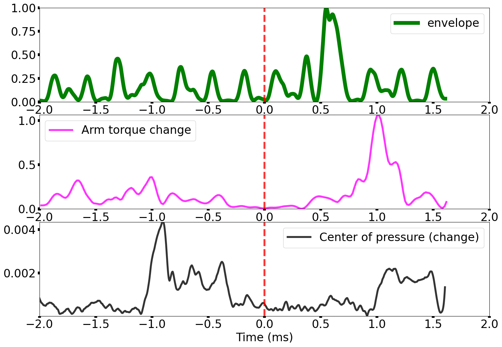

c:\Users\Sarka Kadava\Documents\Github\FLESH_ContinuousBodilyEffort\TS_processing
['c:\\Users\\Sarka Kadava\\Documents\\Github\\FLESH_ContinuousBodilyEffort\\TS_processing/TS_motiontracking\\mt_0_1_0_p0.csv', 'c:\\Users\\Sarka Kadava\\Documents\\Github\\FLESH_ContinuousBodilyEffort\\TS_processing/TS_motiontracking\\mt_0_1_10_p1.csv', 'c:\\Users\\Sarka Kadava\\Documents\\Github\\FLESH_ContinuousBodilyEffort\\TS_processing/TS_motiontracking\\mt_0_1_11_p1.csv', 'c:\\Users\\Sarka Kadava\\Documents\\Github\\FLESH_ContinuousBodilyEffort\\TS_processing/TS_motiontracking\\mt_0_1_12_p1.csv', 'c:\\Users\\Sarka Kadava\\Documents\\Github\\FLESH_ContinuousBodilyEffort\\TS_processing/TS_motiontracking\\mt_0_1_13_p1.csv', 'c:\\Users\\Sarka Kadava\\Documents\\Github\\FLESH_ContinuousBodilyEffort\\TS_processing/TS_motiontracking\\mt_0_1_14_p1.csv', 'c:\\Users\\Sarka Kadava\\Documents\\Github\\FLESH_ContinuousBodilyEffort\\TS_processing/TS_motiontracking\\mt_0_1_15_p1.csv', 'c:\\Users\\Sarka Kadava\\Documents\\Github\\FLESH_ContinuousBodilyEffort\\TS_processing/TS_motiontracking\\mt_0_1_16_p1.csv', 'c:\\Users\\Sarka Kadava\\Documents\\Github\\FLESH_ContinuousBodilyEffort\\TS_processing/TS_motiontracking\\mt_0_1_17_p1.csv', 'c:\\Users\\Sarka Kadava\\Documents\\Github\\FLESH_ContinuousBodilyEffort\\TS_processing/TS_motiontracking\\mt_0_1_18_p0.csv', 'c:\\Users\\Sarka Kadava\\Documents\\Github\\FLESH_ContinuousBodilyEffort\\TS_processing/TS_motiontracking\\mt_0_1_19_p0.csv', 'c:\\Users\\Sarka Kadava\\Documents\\Github\\FLESH_ContinuousBodilyEffort\\TS_processing/TS_motiontracking\\mt_0_1_1_p0.csv', 'c:\\Users\\Sarka Kadava\\Documents\\Github\\FLESH_ContinuousBodilyEffort\\TS_processing/TS_motiontracking\\mt_0_1_20_p0.csv', 'c:\\Users\\Sarka Kadava\\Documents\\Github\\FLESH_ContinuousBodilyEffort\\TS_processing/TS_motiontracking\\mt_0_1_21_p0.csv', 'c:\\Users\\Sarka Kadava\\Documents\\Github\\FLESH_ContinuousBodilyEffort\\TS_processing/TS_motiontracking\\mt_0_1_22_p0.csv', 'c:\\Users\\Sarka Kadava\\Documents\\Github\\FLESH_ContinuousBodilyEffort\\TS_processing/TS_motiontracking\\mt_0_1_23_p0.csv', 'c:\\Users\\Sarka Kadava\\Documents\\Github\\FLESH_ContinuousBodilyEffort\\TS_processing/TS_motiontracking\\mt_0_1_24_p0.csv', 'c:\\Users\\Sarka Kadava\\Documents\\Github\\FLESH_ContinuousBodilyEffort\\TS_processing/TS_motiontracking\\mt_0_1_25_p0.csv', 'c:\\Users\\Sarka Kadava\\Documents\\Github\\FLESH_ContinuousBodilyEffort\\TS_processing/TS_motiontracking\\mt_0_1_26_p0.csv', 'c:\\Users\\Sarka Kadava\\Documents\\Github\\FLESH_ContinuousBodilyEffort\\TS_processing/TS_motiontracking\\mt_0_1_27_p1.csv', 'c:\\Users\\Sarka Kadava\\Documents\\Github\\FLESH_ContinuousBodilyEffort\\TS_processing/TS_motiontracking\\mt_0_1_28_p1.csv', 'c:\\Users\\Sarka Kadava\\Documents\\Github\\FLESH_ContinuousBodilyEffort\\TS_processing/TS_motiontracking\\mt_0_1_29_p1.csv', 'c:\\Users\\Sarka Kadava\\Documents\\Github\\FLESH_ContinuousBodilyEffort\\TS_processing/TS_motiontracking\\mt_0_1_2_p0.csv', 'c:\\Users\\Sarka Kadava\\Documents\\Github\\FLESH_ContinuousBodilyEffort\\TS_processing/TS_motiontracking\\mt_0_1_30_p1.csv', 'c:\\Users\\Sarka Kadava\\Documents\\Github\\FLESH_ContinuousBodilyEffort\\TS_processing/TS_motiontracking\\mt_0_1_31_p1.csv', 'c:\\Users\\Sarka Kadava\\Documents\\Github\\FLESH_ContinuousBodilyEffort\\TS_processing/TS_motiontracking\\mt_0_1_32_p1.csv', 'c:\\Users\\Sarka Kadava\\Documents\\Github\\FLESH_ContinuousBodilyEffort\\TS_processing/TS_motiontracking\\mt_0_1_33_p1.csv', 'c:\\Users\\Sarka Kadava\\Documents\\Github\\FLESH_ContinuousBodilyEffort\\TS_processing/TS_motiontracking\\mt_0_1_34_p1.csv', 'c:\\Users\\Sarka Kadava\\Documents\\Github\\FLESH_ContinuousBodilyEffort\\TS_processing/TS_motiontracking\\mt_0_1_35_p1.csv', 'c:\\Users\\Sarka Kadava\\Documents\\Github\\FLESH_ContinuousBodilyEffort\\TS_processing/TS_motiontracking\\mt_0_1_36_p0.csv', 'c:\\Users\\Sarka Kadava\\Documents\\Github\\FLESH_ContinuousBodilyEffort\\TS_processing/TS_motiontracking\\mt_0_1_37_p0.csv', 'c:\\Users\\Sarka Kadava\\Documents\\Github\\FLESH_ContinuousBodilyEffort\\TS_processing/TS_motiontracking\\mt_0_1_38_p0.csv', 'c:\\Users\\Sarka Kadava\\Documents\\Github\\FLESH_ContinuousBodilyEffort\\TS_processing/TS_motiontracking\\mt_0_1_39_p0.csv', 'c:\\Users\\Sarka Kadava\\Documents\\Github\\FLESH_ContinuousBodilyEffort\\TS_processing/TS_motiontracking\\mt_0_1_3_p0.csv', 'c:\\Users\\Sarka Kadava\\Documents\\Github\\FLESH_ContinuousBodilyEffort\\TS_processing/TS_motiontracking\\mt_0_1_40_p0.csv', 'c:\\Users\\Sarka Kadava\\Documents\\Github\\FLESH_ContinuousBodilyEffort\\TS_processing/TS_motiontracking\\mt_0_1_41_p0.csv', 'c:\\Users\\Sarka Kadava\\Documents\\Github\\FLESH_ContinuousBodilyEffort\\TS_processing/TS_motiontracking\\mt_0_1_42_p0.csv', 'c:\\Users\\Sarka Kadava\\Documents\\Github\\FLESH_ContinuousBodilyEffort\\TS_processing/TS_motiontracking\\mt_0_1_43_p0.csv', 'c:\\Users\\Sarka Kadava\\Documents\\Github\\FLESH_ContinuousBodilyEffort\\TS_processing/TS_motiontracking\\mt_0_1_44_p0.csv', 'c:\\Users\\Sarka Kadava\\Documents\\Github\\FLESH_ContinuousBodilyEffort\\TS_processing/TS_motiontracking\\mt_0_1_45_p1.csv', 'c:\\Users\\Sarka Kadava\\Documents\\Github\\FLESH_ContinuousBodilyEffort\\TS_processing/TS_motiontracking\\mt_0_1_46_p1.csv', 'c:\\Users\\Sarka Kadava\\Documents\\Github\\FLESH_ContinuousBodilyEffort\\TS_processing/TS_motiontracking\\mt_0_1_47_p1.csv', 'c:\\Users\\Sarka Kadava\\Documents\\Github\\FLESH_ContinuousBodilyEffort\\TS_processing/TS_motiontracking\\mt_0_1_48_p1.csv', 'c:\\Users\\Sarka Kadava\\Documents\\Github\\FLESH_ContinuousBodilyEffort\\TS_processing/TS_motiontracking\\mt_0_1_49_p1.csv', 'c:\\Users\\Sarka Kadava\\Documents\\Github\\FLESH_ContinuousBodilyEffort\\TS_processing/TS_motiontracking\\mt_0_1_4_p0.csv', 'c:\\Users\\Sarka Kadava\\Documents\\Github\\FLESH_ContinuousBodilyEffort\\TS_processing/TS_motiontracking\\mt_0_1_50_p1.csv', 'c:\\Users\\Sarka Kadava\\Documents\\Github\\FLESH_ContinuousBodilyEffort\\TS_processing/TS_motiontracking\\mt_0_1_51_p1.csv', 'c:\\Users\\Sarka Kadava\\Documents\\Github\\FLESH_ContinuousBodilyEffort\\TS_processing/TS_motiontracking\\mt_0_1_52_p1.csv', 'c:\\Users\\Sarka Kadava\\Documents\\Github\\FLESH_ContinuousBodilyEffort\\TS_processing/TS_motiontracking\\mt_0_1_53_p1.csv', 'c:\\Users\\Sarka Kadava\\Documents\\Github\\FLESH_ContinuousBodilyEffort\\TS_processing/TS_motiontracking\\mt_0_1_5_p0.csv', 'c:\\Users\\Sarka Kadava\\Documents\\Github\\FLESH_ContinuousBodilyEffort\\TS_processing/TS_motiontracking\\mt_0_1_6_p0.csv', 'c:\\Users\\Sarka Kadava\\Documents\\Github\\FLESH_ContinuousBodilyEffort\\TS_processing/TS_motiontracking\\mt_0_1_7_p0.csv', 'c:\\Users\\Sarka Kadava\\Documents\\Github\\FLESH_ContinuousBodilyEffort\\TS_processing/TS_motiontracking\\mt_0_1_8_p0.csv', 'c:\\Users\\Sarka Kadava\\Documents\\Github\\FLESH_ContinuousBodilyEffort\\TS_processing/TS_motiontracking\\mt_0_1_9_p1.csv', 'c:\\Users\\Sarka Kadava\\Documents\\Github\\FLESH_ContinuousBodilyEffort\\TS_processing/TS_motiontracking\\mt_0_1_tpose_0.csv', 'c:\\Users\\Sarka Kadava\\Documents\\Github\\FLESH_ContinuousBodilyEffort\\TS_processing/TS_motiontracking\\mt_0_1_tpose_1.csv', 'c:\\Users\\Sarka Kadava\\Documents\\Github\\FLESH_ContinuousBodilyEffort\\TS_processing/TS_motiontracking\\mt_0_2_0_p0.csv', 'c:\\Users\\Sarka Kadava\\Documents\\Github\\FLESH_ContinuousBodilyEffort\\TS_processing/TS_motiontracking\\mt_0_2_100_p1.csv', 'c:\\Users\\Sarka Kadava\\Documents\\Github\\FLESH_ContinuousBodilyEffort\\TS_processing/TS_motiontracking\\mt_0_2_101_p1.csv', 'c:\\Users\\Sarka Kadava\\Documents\\Github\\FLESH_ContinuousBodilyEffort\\TS_processing/TS_motiontracking\\mt_0_2_102_p1.csv', 'c:\\Users\\Sarka Kadava\\Documents\\Github\\FLESH_ContinuousBodilyEffort\\TS_processing/TS_motiontracking\\mt_0_2_103_p1.csv', 'c:\\Users\\Sarka Kadava\\Documents\\Github\\FLESH_ContinuousBodilyEffort\\TS_processing/TS_motiontracking\\mt_0_2_104_p1.csv', 'c:\\Users\\Sarka Kadava\\Documents\\Github\\FLESH_ContinuousBodilyEffort\\TS_processing/TS_motiontracking\\mt_0_2_105_p1.csv', 'c:\\Users\\Sarka Kadava\\Documents\\Github\\FLESH_ContinuousBodilyEffort\\TS_processing/TS_motiontracking\\mt_0_2_106_p1.csv', 'c:\\Users\\Sarka Kadava\\Documents\\Github\\FLESH_ContinuousBodilyEffort\\TS_processing/TS_motiontracking\\mt_0_2_107_p1.csv', 'c:\\Users\\Sarka Kadava\\Documents\\Github\\FLESH_ContinuousBodilyEffort\\TS_processing/TS_motiontracking\\mt_0_2_108_p1.csv', 'c:\\Users\\Sarka Kadava\\Documents\\Github\\FLESH_ContinuousBodilyEffort\\TS_processing/TS_motiontracking\\mt_0_2_109_p1.csv', 'c:\\Users\\Sarka Kadava\\Documents\\Github\\FLESH_ContinuousBodilyEffort\\TS_processing/TS_motiontracking\\mt_0_2_10_p0.csv', 'c:\\Users\\Sarka Kadava\\Documents\\Github\\FLESH_ContinuousBodilyEffort\\TS_processing/TS_motiontracking\\mt_0_2_110_p1.csv', 'c:\\Users\\Sarka Kadava\\Documents\\Github\\FLESH_ContinuousBodilyEffort\\TS_processing/TS_motiontracking\\mt_0_2_111_p1.csv', 'c:\\Users\\Sarka Kadava\\Documents\\Github\\FLESH_ContinuousBodilyEffort\\TS_processing/TS_motiontracking\\mt_0_2_112_p1.csv', 'c:\\Users\\Sarka Kadava\\Documents\\Github\\FLESH_ContinuousBodilyEffort\\TS_processing/TS_motiontracking\\mt_0_2_113_p1.csv', 'c:\\Users\\Sarka Kadava\\Documents\\Github\\FLESH_ContinuousBodilyEffort\\TS_processing/TS_motiontracking\\mt_0_2_11_p0.csv', 'c:\\Users\\Sarka Kadava\\Documents\\Github\\FLESH_ContinuousBodilyEffort\\TS_processing/TS_motiontracking\\mt_0_2_12_p0.csv', 'c:\\Users\\Sarka Kadava\\Documents\\Github\\FLESH_ContinuousBodilyEffort\\TS_processing/TS_motiontracking\\mt_0_2_13_p0.csv', 'c:\\Users\\Sarka Kadava\\Documents\\Github\\FLESH_ContinuousBodilyEffort\\TS_processing/TS_motiontracking\\mt_0_2_14_p0.csv', 'c:\\Users\\Sarka Kadava\\Documents\\Github\\FLESH_ContinuousBodilyEffort\\TS_processing/TS_motiontracking\\mt_0_2_15_p0.csv', 'c:\\Users\\Sarka Kadava\\Documents\\Github\\FLESH_ContinuousBodilyEffort\\TS_processing/TS_motiontracking\\mt_0_2_16_p0.csv', 'c:\\Users\\Sarka Kadava\\Documents\\Github\\FLESH_ContinuousBodilyEffort\\TS_processing/TS_motiontracking\\mt_0_2_17_p0.csv', 'c:\\Users\\Sarka Kadava\\Documents\\Github\\FLESH_ContinuousBodilyEffort\\TS_processing/TS_motiontracking\\mt_0_2_18_p0.csv', 'c:\\Users\\Sarka Kadava\\Documents\\Github\\FLESH_ContinuousBodilyEffort\\TS_processing/TS_motiontracking\\mt_0_2_19_p1.csv', 'c:\\Users\\Sarka Kadava\\Documents\\Github\\FLESH_ContinuousBodilyEffort\\TS_processing/TS_motiontracking\\mt_0_2_1_p0.csv', 'c:\\Users\\Sarka Kadava\\Documents\\Github\\FLESH_ContinuousBodilyEffort\\TS_processing/TS_motiontracking\\mt_0_2_20_p1.csv', 'c:\\Users\\Sarka Kadava\\Documents\\Github\\FLESH_ContinuousBodilyEffort\\TS_processing/TS_motiontracking\\mt_0_2_21_p1.csv', 'c:\\Users\\Sarka Kadava\\Documents\\Github\\FLESH_ContinuousBodilyEffort\\TS_processing/TS_motiontracking\\mt_0_2_22_p1.csv', 'c:\\Users\\Sarka Kadava\\Documents\\Github\\FLESH_ContinuousBodilyEffort\\TS_processing/TS_motiontracking\\mt_0_2_23_p1.csv', 'c:\\Users\\Sarka Kadava\\Documents\\Github\\FLESH_ContinuousBodilyEffort\\TS_processing/TS_motiontracking\\mt_0_2_24_p1.csv', 'c:\\Users\\Sarka Kadava\\Documents\\Github\\FLESH_ContinuousBodilyEffort\\TS_processing/TS_motiontracking\\mt_0_2_25_p1.csv', 'c:\\Users\\Sarka Kadava\\Documents\\Github\\FLESH_ContinuousBodilyEffort\\TS_processing/TS_motiontracking\\mt_0_2_26_p1.csv', 'c:\\Users\\Sarka Kadava\\Documents\\Github\\FLESH_ContinuousBodilyEffort\\TS_processing/TS_motiontracking\\mt_0_2_27_p1.csv', 'c:\\Users\\Sarka Kadava\\Documents\\Github\\FLESH_ContinuousBodilyEffort\\TS_processing/TS_motiontracking\\mt_0_2_28_p1.csv', 'c:\\Users\\Sarka Kadava\\Documents\\Github\\FLESH_ContinuousBodilyEffort\\TS_processing/TS_motiontracking\\mt_0_2_29_p1.csv', 'c:\\Users\\Sarka Kadava\\Documents\\Github\\FLESH_ContinuousBodilyEffort\\TS_processing/TS_motiontracking\\mt_0_2_2_p0.csv', 'c:\\Users\\Sarka Kadava\\Documents\\Github\\FLESH_ContinuousBodilyEffort\\TS_processing/TS_motiontracking\\mt_0_2_30_p1.csv', 'c:\\Users\\Sarka Kadava\\Documents\\Github\\FLESH_ContinuousBodilyEffort\\TS_processing/TS_motiontracking\\mt_0_2_31_p1.csv', 'c:\\Users\\Sarka Kadava\\Documents\\Github\\FLESH_ContinuousBodilyEffort\\TS_processing/TS_motiontracking\\mt_0_2_32_p1.csv', 'c:\\Users\\Sarka Kadava\\Documents\\Github\\FLESH_ContinuousBodilyEffort\\TS_processing/TS_motiontracking\\mt_0_2_33_p1.csv', 'c:\\Users\\Sarka Kadava\\Documents\\Github\\FLESH_ContinuousBodilyEffort\\TS_processing/TS_motiontracking\\mt_0_2_34_p1.csv', 'c:\\Users\\Sarka Kadava\\Documents\\Github\\FLESH_ContinuousBodilyEffort\\TS_processing/TS_motiontracking\\mt_0_2_35_p1.csv', 'c:\\Users\\Sarka Kadava\\Documents\\Github\\FLESH_ContinuousBodilyEffort\\TS_processing/TS_motiontracking\\mt_0_2_36_p1.csv', 'c:\\Users\\Sarka Kadava\\Documents\\Github\\FLESH_ContinuousBodilyEffort\\TS_processing/TS_motiontracking\\mt_0_2_37_p1.csv', 'c:\\Users\\Sarka Kadava\\Documents\\Github\\FLESH_ContinuousBodilyEffort\\TS_processing/TS_motiontracking\\mt_0_2_38_p0.csv', 'c:\\Users\\Sarka Kadava\\Documents\\Github\\FLESH_ContinuousBodilyEffort\\TS_processing/TS_motiontracking\\mt_0_2_39_p0.csv', 'c:\\Users\\Sarka Kadava\\Documents\\Github\\FLESH_ContinuousBodilyEffort\\TS_processing/TS_motiontracking\\mt_0_2_3_p0.csv', 'c:\\Users\\Sarka Kadava\\Documents\\Github\\FLESH_ContinuousBodilyEffort\\TS_processing/TS_motiontracking\\mt_0_2_40_p0.csv', 'c:\\Users\\Sarka Kadava\\Documents\\Github\\FLESH_ContinuousBodilyEffort\\TS_processing/TS_motiontracking\\mt_0_2_41_p0.csv', 'c:\\Users\\Sarka Kadava\\Documents\\Github\\FLESH_ContinuousBodilyEffort\\TS_processing/TS_motiontracking\\mt_0_2_42_p0.csv', 'c:\\Users\\Sarka Kadava\\Documents\\Github\\FLESH_ContinuousBodilyEffort\\TS_processing/TS_motiontracking\\mt_0_2_43_p0.csv', 'c:\\Users\\Sarka Kadava\\Documents\\Github\\FLESH_ContinuousBodilyEffort\\TS_processing/TS_motiontracking\\mt_0_2_44_p0.csv', 'c:\\Users\\Sarka Kadava\\Documents\\Github\\FLESH_ContinuousBodilyEffort\\TS_processing/TS_motiontracking\\mt_0_2_45_p0.csv', 'c:\\Users\\Sarka Kadava\\Documents\\Github\\FLESH_ContinuousBodilyEffort\\TS_processing/TS_motiontracking\\mt_0_2_46_p0.csv', 'c:\\Users\\Sarka Kadava\\Documents\\Github\\FLESH_ContinuousBodilyEffort\\TS_processing/TS_motiontracking\\mt_0_2_47_p0.csv', 'c:\\Users\\Sarka Kadava\\Documents\\Github\\FLESH_ContinuousBodilyEffort\\TS_processing/TS_motiontracking\\mt_0_2_48_p0.csv', 'c:\\Users\\Sarka Kadava\\Documents\\Github\\FLESH_ContinuousBodilyEffort\\TS_processing/TS_motiontracking\\mt_0_2_49_p0.csv', 'c:\\Users\\Sarka Kadava\\Documents\\Github\\FLESH_ContinuousBodilyEffort\\TS_processing/TS_motiontracking\\mt_0_2_4_p0.csv', 'c:\\Users\\Sarka Kadava\\Documents\\Github\\FLESH_ContinuousBodilyEffort\\TS_processing/TS_motiontracking\\mt_0_2_50_p0.csv', 'c:\\Users\\Sarka Kadava\\Documents\\Github\\FLESH_ContinuousBodilyEffort\\TS_processing/TS_motiontracking\\mt_0_2_51_p0.csv', 'c:\\Users\\Sarka Kadava\\Documents\\Github\\FLESH_ContinuousBodilyEffort\\TS_processing/TS_motiontracking\\mt_0_2_52_p0.csv', 'c:\\Users\\Sarka Kadava\\Documents\\Github\\FLESH_ContinuousBodilyEffort\\TS_processing/TS_motiontracking\\mt_0_2_53_p1.csv', 'c:\\Users\\Sarka Kadava\\Documents\\Github\\FLESH_ContinuousBodilyEffort\\TS_processing/TS_motiontracking\\mt_0_2_54_p1.csv', 'c:\\Users\\Sarka Kadava\\Documents\\Github\\FLESH_ContinuousBodilyEffort\\TS_processing/TS_motiontracking\\mt_0_2_55_p1.csv', 'c:\\Users\\Sarka Kadava\\Documents\\Github\\FLESH_ContinuousBodilyEffort\\TS_processing/TS_motiontracking\\mt_0_2_56_p1.csv', 'c:\\Users\\Sarka Kadava\\Documents\\Github\\FLESH_ContinuousBodilyEffort\\TS_processing/TS_motiontracking\\mt_0_2_57_p1.csv', 'c:\\Users\\Sarka Kadava\\Documents\\Github\\FLESH_ContinuousBodilyEffort\\TS_processing/TS_motiontracking\\mt_0_2_58_p1.csv', 'c:\\Users\\Sarka Kadava\\Documents\\Github\\FLESH_ContinuousBodilyEffort\\TS_processing/TS_motiontracking\\mt_0_2_59_p1.csv', 'c:\\Users\\Sarka Kadava\\Documents\\Github\\FLESH_ContinuousBodilyEffort\\TS_processing/TS_motiontracking\\mt_0_2_5_p0.csv', 'c:\\Users\\Sarka Kadava\\Documents\\Github\\FLESH_ContinuousBodilyEffort\\TS_processing/TS_motiontracking\\mt_0_2_60_p1.csv', 'c:\\Users\\Sarka Kadava\\Documents\\Github\\FLESH_ContinuousBodilyEffort\\TS_processing/TS_motiontracking\\mt_0_2_61_p1.csv', 'c:\\Users\\Sarka Kadava\\Documents\\Github\\FLESH_ContinuousBodilyEffort\\TS_processing/TS_motiontracking\\mt_0_2_62_p1.csv', 'c:\\Users\\Sarka Kadava\\Documents\\Github\\FLESH_ContinuousBodilyEffort\\TS_processing/TS_motiontracking\\mt_0_2_63_p1.csv', 'c:\\Users\\Sarka Kadava\\Documents\\Github\\FLESH_ContinuousBodilyEffort\\TS_processing/TS_motiontracking\\mt_0_2_64_p1.csv', 'c:\\Users\\Sarka Kadava\\Documents\\Github\\FLESH_ContinuousBodilyEffort\\TS_processing/TS_motiontracking\\mt_0_2_65_p1.csv', 'c:\\Users\\Sarka Kadava\\Documents\\Github\\FLESH_ContinuousBodilyEffort\\TS_processing/TS_motiontracking\\mt_0_2_67_p0.csv', 'c:\\Users\\Sarka Kadava\\Documents\\Github\\FLESH_ContinuousBodilyEffort\\TS_processing/TS_motiontracking\\mt_0_2_68_p0.csv', 'c:\\Users\\Sarka Kadava\\Documents\\Github\\FLESH_ContinuousBodilyEffort\\TS_processing/TS_motiontracking\\mt_0_2_69_p0.csv', 'c:\\Users\\Sarka Kadava\\Documents\\Github\\FLESH_ContinuousBodilyEffort\\TS_processing/TS_motiontracking\\mt_0_2_6_p0.csv', 'c:\\Users\\Sarka Kadava\\Documents\\Github\\FLESH_ContinuousBodilyEffort\\TS_processing/TS_motiontracking\\mt_0_2_70_p0.csv', 'c:\\Users\\Sarka Kadava\\Documents\\Github\\FLESH_ContinuousBodilyEffort\\TS_processing/TS_motiontracking\\mt_0_2_71_p0.csv', 'c:\\Users\\Sarka Kadava\\Documents\\Github\\FLESH_ContinuousBodilyEffort\\TS_processing/TS_motiontracking\\mt_0_2_72_p0.csv', 'c:\\Users\\Sarka Kadava\\Documents\\Github\\FLESH_ContinuousBodilyEffort\\TS_processing/TS_motiontracking\\mt_0_2_73_p0.csv', 'c:\\Users\\Sarka Kadava\\Documents\\Github\\FLESH_ContinuousBodilyEffort\\TS_processing/TS_motiontracking\\mt_0_2_74_p0.csv', 'c:\\Users\\Sarka Kadava\\Documents\\Github\\FLESH_ContinuousBodilyEffort\\TS_processing/TS_motiontracking\\mt_0_2_75_p0.csv', 'c:\\Users\\Sarka Kadava\\Documents\\Github\\FLESH_ContinuousBodilyEffort\\TS_processing/TS_motiontracking\\mt_0_2_76_p0.csv', 'c:\\Users\\Sarka Kadava\\Documents\\Github\\FLESH_ContinuousBodilyEffort\\TS_processing/TS_motiontracking\\mt_0_2_77_p0.csv', 'c:\\Users\\Sarka Kadava\\Documents\\Github\\FLESH_ContinuousBodilyEffort\\TS_processing/TS_motiontracking\\mt_0_2_78_p0.csv', 'c:\\Users\\Sarka Kadava\\Documents\\Github\\FLESH_ContinuousBodilyEffort\\TS_processing/TS_motiontracking\\mt_0_2_79_p0.csv', 'c:\\Users\\Sarka Kadava\\Documents\\Github\\FLESH_ContinuousBodilyEffort\\TS_processing/TS_motiontracking\\mt_0_2_7_p0.csv', 'c:\\Users\\Sarka Kadava\\Documents\\Github\\FLESH_ContinuousBodilyEffort\\TS_processing/TS_motiontracking\\mt_0_2_80_p0.csv', 'c:\\Users\\Sarka Kadava\\Documents\\Github\\FLESH_ContinuousBodilyEffort\\TS_processing/TS_motiontracking\\mt_0_2_81_p0.csv', 'c:\\Users\\Sarka Kadava\\Documents\\Github\\FLESH_ContinuousBodilyEffort\\TS_processing/TS_motiontracking\\mt_0_2_82_p0.csv', 'c:\\Users\\Sarka Kadava\\Documents\\Github\\FLESH_ContinuousBodilyEffort\\TS_processing/TS_motiontracking\\mt_0_2_83_p0.csv', 'c:\\Users\\Sarka Kadava\\Documents\\Github\\FLESH_ContinuousBodilyEffort\\TS_processing/TS_motiontracking\\mt_0_2_84_p0.csv', 'c:\\Users\\Sarka Kadava\\Documents\\Github\\FLESH_ContinuousBodilyEffort\\TS_processing/TS_motiontracking\\mt_0_2_85_p0.csv', 'c:\\Users\\Sarka Kadava\\Documents\\Github\\FLESH_ContinuousBodilyEffort\\TS_processing/TS_motiontracking\\mt_0_2_86_p0.csv', 'c:\\Users\\Sarka Kadava\\Documents\\Github\\FLESH_ContinuousBodilyEffort\\TS_processing/TS_motiontracking\\mt_0_2_87_p0.csv', 'c:\\Users\\Sarka Kadava\\Documents\\Github\\FLESH_ContinuousBodilyEffort\\TS_processing/TS_motiontracking\\mt_0_2_88_p0.csv', 'c:\\Users\\Sarka Kadava\\Documents\\Github\\FLESH_ContinuousBodilyEffort\\TS_processing/TS_motiontracking\\mt_0_2_89_p0.csv', 'c:\\Users\\Sarka Kadava\\Documents\\Github\\FLESH_ContinuousBodilyEffort\\TS_processing/TS_motiontracking\\mt_0_2_8_p0.csv', 'c:\\Users\\Sarka Kadava\\Documents\\Github\\FLESH_ContinuousBodilyEffort\\TS_processing/TS_motiontracking\\mt_0_2_90_p0.csv', 'c:\\Users\\Sarka Kadava\\Documents\\Github\\FLESH_ContinuousBodilyEffort\\TS_processing/TS_motiontracking\\mt_0_2_91_p0.csv', 'c:\\Users\\Sarka Kadava\\Documents\\Github\\FLESH_ContinuousBodilyEffort\\TS_processing/TS_motiontracking\\mt_0_2_92_p1.csv', 'c:\\Users\\Sarka Kadava\\Documents\\Github\\FLESH_ContinuousBodilyEffort\\TS_processing/TS_motiontracking\\mt_0_2_93_p1.csv', 'c:\\Users\\Sarka Kadava\\Documents\\Github\\FLESH_ContinuousBodilyEffort\\TS_processing/TS_motiontracking\\mt_0_2_94_p1.csv', 'c:\\Users\\Sarka Kadava\\Documents\\Github\\FLESH_ContinuousBodilyEffort\\TS_processing/TS_motiontracking\\mt_0_2_95_p1.csv', 'c:\\Users\\Sarka Kadava\\Documents\\Github\\FLESH_ContinuousBodilyEffort\\TS_processing/TS_motiontracking\\mt_0_2_96_p1.csv', 'c:\\Users\\Sarka Kadava\\Documents\\Github\\FLESH_ContinuousBodilyEffort\\TS_processing/TS_motiontracking\\mt_0_2_97_p1.csv', 'c:\\Users\\Sarka Kadava\\Documents\\Github\\FLESH_ContinuousBodilyEffort\\TS_processing/TS_motiontracking\\mt_0_2_98_p1.csv', 'c:\\Users\\Sarka Kadava\\Documents\\Github\\FLESH_ContinuousBodilyEffort\\TS_processing/TS_motiontracking\\mt_0_2_99_p1.csv', 'c:\\Users\\Sarka Kadava\\Documents\\Github\\FLESH_ContinuousBodilyEffort\\TS_processing/TS_motiontracking\\mt_0_2_9_p0.csv', 'c:\\Users\\Sarka Kadava\\Documents\\Github\\FLESH_ContinuousBodilyEffort\\TS_processing/TS_motiontracking\\mt_centered_0_1_0_p0.csv', 'c:\\Users\\Sarka Kadava\\Documents\\Github\\FLESH_ContinuousBodilyEffort\\TS_processing/TS_motiontracking\\mt_centered_0_1_10_p1.csv', 'c:\\Users\\Sarka Kadava\\Documents\\Github\\FLESH_ContinuousBodilyEffort\\TS_processing/TS_motiontracking\\mt_centered_0_1_11_p1.csv', 'c:\\Users\\Sarka Kadava\\Documents\\Github\\FLESH_ContinuousBodilyEffort\\TS_processing/TS_motiontracking\\mt_centered_0_1_12_p1.csv', 'c:\\Users\\Sarka Kadava\\Documents\\Github\\FLESH_ContinuousBodilyEffort\\TS_processing/TS_motiontracking\\mt_centered_0_1_13_p1.csv', 'c:\\Users\\Sarka Kadava\\Documents\\Github\\FLESH_ContinuousBodilyEffort\\TS_processing/TS_motiontracking\\mt_centered_0_1_14_p1.csv', 'c:\\Users\\Sarka Kadava\\Documents\\Github\\FLESH_ContinuousBodilyEffort\\TS_processing/TS_motiontracking\\mt_centered_0_1_15_p1.csv', 'c:\\Users\\Sarka Kadava\\Documents\\Github\\FLESH_ContinuousBodilyEffort\\TS_processing/TS_motiontracking\\mt_centered_0_1_16_p1.csv', 'c:\\Users\\Sarka Kadava\\Documents\\Github\\FLESH_ContinuousBodilyEffort\\TS_processing/TS_motiontracking\\mt_centered_0_1_17_p1.csv', 'c:\\Users\\Sarka Kadava\\Documents\\Github\\FLESH_ContinuousBodilyEffort\\TS_processing/TS_motiontracking\\mt_centered_0_1_18_p0.csv', 'c:\\Users\\Sarka Kadava\\Documents\\Github\\FLESH_ContinuousBodilyEffort\\TS_processing/TS_motiontracking\\mt_centered_0_1_19_p0.csv', 'c:\\Users\\Sarka Kadava\\Documents\\Github\\FLESH_ContinuousBodilyEffort\\TS_processing/TS_motiontracking\\mt_centered_0_1_1_p0.csv', 'c:\\Users\\Sarka Kadava\\Documents\\Github\\FLESH_ContinuousBodilyEffort\\TS_processing/TS_motiontracking\\mt_centered_0_1_20_p0.csv', 'c:\\Users\\Sarka Kadava\\Documents\\Github\\FLESH_ContinuousBodilyEffort\\TS_processing/TS_motiontracking\\mt_centered_0_1_21_p0.csv', 'c:\\Users\\Sarka Kadava\\Documents\\Github\\FLESH_ContinuousBodilyEffort\\TS_processing/TS_motiontracking\\mt_centered_0_1_22_p0.csv', 'c:\\Users\\Sarka Kadava\\Documents\\Github\\FLESH_ContinuousBodilyEffort\\TS_processing/TS_motiontracking\\mt_centered_0_1_23_p0.csv', 'c:\\Users\\Sarka Kadava\\Documents\\Github\\FLESH_ContinuousBodilyEffort\\TS_processing/TS_motiontracking\\mt_centered_0_1_24_p0.csv', 'c:\\Users\\Sarka Kadava\\Documents\\Github\\FLESH_ContinuousBodilyEffort\\TS_processing/TS_motiontracking\\mt_centered_0_1_25_p0.csv', 'c:\\Users\\Sarka Kadava\\Documents\\Github\\FLESH_ContinuousBodilyEffort\\TS_processing/TS_motiontracking\\mt_centered_0_1_26_p0.csv', 'c:\\Users\\Sarka Kadava\\Documents\\Github\\FLESH_ContinuousBodilyEffort\\TS_processing/TS_motiontracking\\mt_centered_0_1_27_p1.csv', 'c:\\Users\\Sarka Kadava\\Documents\\Github\\FLESH_ContinuousBodilyEffort\\TS_processing/TS_motiontracking\\mt_centered_0_1_28_p1.csv', 'c:\\Users\\Sarka Kadava\\Documents\\Github\\FLESH_ContinuousBodilyEffort\\TS_processing/TS_motiontracking\\mt_centered_0_1_29_p1.csv', 'c:\\Users\\Sarka Kadava\\Documents\\Github\\FLESH_ContinuousBodilyEffort\\TS_processing/TS_motiontracking\\mt_centered_0_1_2_p0.csv', 'c:\\Users\\Sarka Kadava\\Documents\\Github\\FLESH_ContinuousBodilyEffort\\TS_processing/TS_motiontracking\\mt_centered_0_1_30_p1.csv', 'c:\\Users\\Sarka Kadava\\Documents\\Github\\FLESH_ContinuousBodilyEffort\\TS_processing/TS_motiontracking\\mt_centered_0_1_31_p1.csv', 'c:\\Users\\Sarka Kadava\\Documents\\Github\\FLESH_ContinuousBodilyEffort\\TS_processing/TS_motiontracking\\mt_centered_0_1_32_p1.csv', 'c:\\Users\\Sarka Kadava\\Documents\\Github\\FLESH_ContinuousBodilyEffort\\TS_processing/TS_motiontracking\\mt_centered_0_1_33_p1.csv', 'c:\\Users\\Sarka Kadava\\Documents\\Github\\FLESH_ContinuousBodilyEffort\\TS_processing/TS_motiontracking\\mt_centered_0_1_35_p1.csv', 'c:\\Users\\Sarka Kadava\\Documents\\Github\\FLESH_ContinuousBodilyEffort\\TS_processing/TS_motiontracking\\mt_centered_0_1_36_p0.csv', 'c:\\Users\\Sarka Kadava\\Documents\\Github\\FLESH_ContinuousBodilyEffort\\TS_processing/TS_motiontracking\\mt_centered_0_1_37_p0.csv', 'c:\\Users\\Sarka Kadava\\Documents\\Github\\FLESH_ContinuousBodilyEffort\\TS_processing/TS_motiontracking\\mt_centered_0_1_38_p0.csv', 'c:\\Users\\Sarka Kadava\\Documents\\Github\\FLESH_ContinuousBodilyEffort\\TS_processing/TS_motiontracking\\mt_centered_0_1_39_p0.csv', 'c:\\Users\\Sarka Kadava\\Documents\\Github\\FLESH_ContinuousBodilyEffort\\TS_processing/TS_motiontracking\\mt_centered_0_1_3_p0.csv', 'c:\\Users\\Sarka Kadava\\Documents\\Github\\FLESH_ContinuousBodilyEffort\\TS_processing/TS_motiontracking\\mt_centered_0_1_40_p0.csv', 'c:\\Users\\Sarka Kadava\\Documents\\Github\\FLESH_ContinuousBodilyEffort\\TS_processing/TS_motiontracking\\mt_centered_0_1_41_p0.csv', 'c:\\Users\\Sarka Kadava\\Documents\\Github\\FLESH_ContinuousBodilyEffort\\TS_processing/TS_motiontracking\\mt_centered_0_1_42_p0.csv', 'c:\\Users\\Sarka Kadava\\Documents\\Github\\FLESH_ContinuousBodilyEffort\\TS_processing/TS_motiontracking\\mt_centered_0_1_43_p0.csv', 'c:\\Users\\Sarka Kadava\\Documents\\Github\\FLESH_ContinuousBodilyEffort\\TS_processing/TS_motiontracking\\mt_centered_0_1_44_p0.csv', 'c:\\Users\\Sarka Kadava\\Documents\\Github\\FLESH_ContinuousBodilyEffort\\TS_processing/TS_motiontracking\\mt_centered_0_1_45_p1.csv', 'c:\\Users\\Sarka Kadava\\Documents\\Github\\FLESH_ContinuousBodilyEffort\\TS_processing/TS_motiontracking\\mt_centered_0_1_46_p1.csv', 'c:\\Users\\Sarka Kadava\\Documents\\Github\\FLESH_ContinuousBodilyEffort\\TS_processing/TS_motiontracking\\mt_centered_0_1_47_p1.csv', 'c:\\Users\\Sarka Kadava\\Documents\\Github\\FLESH_ContinuousBodilyEffort\\TS_processing/TS_motiontracking\\mt_centered_0_1_48_p1.csv', 'c:\\Users\\Sarka Kadava\\Documents\\Github\\FLESH_ContinuousBodilyEffort\\TS_processing/TS_motiontracking\\mt_centered_0_1_49_p1.csv', 'c:\\Users\\Sarka Kadava\\Documents\\Github\\FLESH_ContinuousBodilyEffort\\TS_processing/TS_motiontracking\\mt_centered_0_1_4_p0.csv', 'c:\\Users\\Sarka Kadava\\Documents\\Github\\FLESH_ContinuousBodilyEffort\\TS_processing/TS_motiontracking\\mt_centered_0_1_50_p1.csv', 'c:\\Users\\Sarka Kadava\\Documents\\Github\\FLESH_ContinuousBodilyEffort\\TS_processing/TS_motiontracking\\mt_centered_0_1_51_p1.csv', 'c:\\Users\\Sarka Kadava\\Documents\\Github\\FLESH_ContinuousBodilyEffort\\TS_processing/TS_motiontracking\\mt_centered_0_1_52_p1.csv', 'c:\\Users\\Sarka Kadava\\Documents\\Github\\FLESH_ContinuousBodilyEffort\\TS_processing/TS_motiontracking\\mt_centered_0_1_53_p1.csv', 'c:\\Users\\Sarka Kadava\\Documents\\Github\\FLESH_ContinuousBodilyEffort\\TS_processing/TS_motiontracking\\mt_centered_0_1_5_p0.csv', 'c:\\Users\\Sarka Kadava\\Documents\\Github\\FLESH_ContinuousBodilyEffort\\TS_processing/TS_motiontracking\\mt_centered_0_1_6_p0.csv', 'c:\\Users\\Sarka Kadava\\Documents\\Github\\FLESH_ContinuousBodilyEffort\\TS_processing/TS_motiontracking\\mt_centered_0_1_7_p0.csv', 'c:\\Users\\Sarka Kadava\\Documents\\Github\\FLESH_ContinuousBodilyEffort\\TS_processing/TS_motiontracking\\mt_centered_0_1_8_p0.csv', 'c:\\Users\\Sarka Kadava\\Documents\\Github\\FLESH_ContinuousBodilyEffort\\TS_processing/TS_motiontracking\\mt_centered_0_1_9_p1.csv', 'c:\\Users\\Sarka Kadava\\Documents\\Github\\FLESH_ContinuousBodilyEffort\\TS_processing/TS_motiontracking\\mt_centered_0_1_tpose_0.csv', 'c:\\Users\\Sarka Kadava\\Documents\\Github\\FLESH_ContinuousBodilyEffort\\TS_processing/TS_motiontracking\\mt_centered_0_1_tpose_1.csv', 'c:\\Users\\Sarka Kadava\\Documents\\Github\\FLESH_ContinuousBodilyEffort\\TS_processing/TS_motiontracking\\mt_centered_0_2_0_p0.csv', 'c:\\Users\\Sarka Kadava\\Documents\\Github\\FLESH_ContinuousBodilyEffort\\TS_processing/TS_motiontracking\\mt_centered_0_2_100_p1.csv', 'c:\\Users\\Sarka Kadava\\Documents\\Github\\FLESH_ContinuousBodilyEffort\\TS_processing/TS_motiontracking\\mt_centered_0_2_101_p1.csv', 'c:\\Users\\Sarka Kadava\\Documents\\Github\\FLESH_ContinuousBodilyEffort\\TS_processing/TS_motiontracking\\mt_centered_0_2_102_p1.csv', 'c:\\Users\\Sarka Kadava\\Documents\\Github\\FLESH_ContinuousBodilyEffort\\TS_processing/TS_motiontracking\\mt_centered_0_2_103_p1.csv', 'c:\\Users\\Sarka Kadava\\Documents\\Github\\FLESH_ContinuousBodilyEffort\\TS_processing/TS_motiontracking\\mt_centered_0_2_104_p1.csv', 'c:\\Users\\Sarka Kadava\\Documents\\Github\\FLESH_ContinuousBodilyEffort\\TS_processing/TS_motiontracking\\mt_centered_0_2_105_p1.csv', 'c:\\Users\\Sarka Kadava\\Documents\\Github\\FLESH_ContinuousBodilyEffort\\TS_processing/TS_motiontracking\\mt_centered_0_2_106_p1.csv', 'c:\\Users\\Sarka Kadava\\Documents\\Github\\FLESH_ContinuousBodilyEffort\\TS_processing/TS_motiontracking\\mt_centered_0_2_107_p1.csv', 'c:\\Users\\Sarka Kadava\\Documents\\Github\\FLESH_ContinuousBodilyEffort\\TS_processing/TS_motiontracking\\mt_centered_0_2_108_p1.csv', 'c:\\Users\\Sarka Kadava\\Documents\\Github\\FLESH_ContinuousBodilyEffort\\TS_processing/TS_motiontracking\\mt_centered_0_2_109_p1.csv', 'c:\\Users\\Sarka Kadava\\Documents\\Github\\FLESH_ContinuousBodilyEffort\\TS_processing/TS_motiontracking\\mt_centered_0_2_10_p0.csv', 'c:\\Users\\Sarka Kadava\\Documents\\Github\\FLESH_ContinuousBodilyEffort\\TS_processing/TS_motiontracking\\mt_centered_0_2_110_p1.csv', 'c:\\Users\\Sarka Kadava\\Documents\\Github\\FLESH_ContinuousBodilyEffort\\TS_processing/TS_motiontracking\\mt_centered_0_2_111_p1.csv', 'c:\\Users\\Sarka Kadava\\Documents\\Github\\FLESH_ContinuousBodilyEffort\\TS_processing/TS_motiontracking\\mt_centered_0_2_112_p1.csv', 'c:\\Users\\Sarka Kadava\\Documents\\Github\\FLESH_ContinuousBodilyEffort\\TS_processing/TS_motiontracking\\mt_centered_0_2_113_p1.csv', 'c:\\Users\\Sarka Kadava\\Documents\\Github\\FLESH_ContinuousBodilyEffort\\TS_processing/TS_motiontracking\\mt_centered_0_2_11_p0.csv', 'c:\\Users\\Sarka Kadava\\Documents\\Github\\FLESH_ContinuousBodilyEffort\\TS_processing/TS_motiontracking\\mt_centered_0_2_12_p0.csv', 'c:\\Users\\Sarka Kadava\\Documents\\Github\\FLESH_ContinuousBodilyEffort\\TS_processing/TS_motiontracking\\mt_centered_0_2_13_p0.csv', 'c:\\Users\\Sarka Kadava\\Documents\\Github\\FLESH_ContinuousBodilyEffort\\TS_processing/TS_motiontracking\\mt_centered_0_2_14_p0.csv', 'c:\\Users\\Sarka Kadava\\Documents\\Github\\FLESH_ContinuousBodilyEffort\\TS_processing/TS_motiontracking\\mt_centered_0_2_15_p0.csv', 'c:\\Users\\Sarka Kadava\\Documents\\Github\\FLESH_ContinuousBodilyEffort\\TS_processing/TS_motiontracking\\mt_centered_0_2_16_p0.csv', 'c:\\Users\\Sarka Kadava\\Documents\\Github\\FLESH_ContinuousBodilyEffort\\TS_processing/TS_motiontracking\\mt_centered_0_2_17_p0.csv', 'c:\\Users\\Sarka Kadava\\Documents\\Github\\FLESH_ContinuousBodilyEffort\\TS_processing/TS_motiontracking\\mt_centered_0_2_18_p0.csv', 'c:\\Users\\Sarka Kadava\\Documents\\Github\\FLESH_ContinuousBodilyEffort\\TS_processing/TS_motiontracking\\mt_centered_0_2_19_p1.csv', 'c:\\Users\\Sarka Kadava\\Documents\\Github\\FLESH_ContinuousBodilyEffort\\TS_processing/TS_motiontracking\\mt_centered_0_2_1_p0.csv', 'c:\\Users\\Sarka Kadava\\Documents\\Github\\FLESH_ContinuousBodilyEffort\\TS_processing/TS_motiontracking\\mt_centered_0_2_20_p1.csv', 'c:\\Users\\Sarka Kadava\\Documents\\Github\\FLESH_ContinuousBodilyEffort\\TS_processing/TS_motiontracking\\mt_centered_0_2_21_p1.csv', 'c:\\Users\\Sarka Kadava\\Documents\\Github\\FLESH_ContinuousBodilyEffort\\TS_processing/TS_motiontracking\\mt_centered_0_2_22_p1.csv', 'c:\\Users\\Sarka Kadava\\Documents\\Github\\FLESH_ContinuousBodilyEffort\\TS_processing/TS_motiontracking\\mt_centered_0_2_23_p1.csv', 'c:\\Users\\Sarka Kadava\\Documents\\Github\\FLESH_ContinuousBodilyEffort\\TS_processing/TS_motiontracking\\mt_centered_0_2_24_p1.csv', 'c:\\Users\\Sarka Kadava\\Documents\\Github\\FLESH_ContinuousBodilyEffort\\TS_processing/TS_motiontracking\\mt_centered_0_2_25_p1.csv', 'c:\\Users\\Sarka Kadava\\Documents\\Github\\FLESH_ContinuousBodilyEffort\\TS_processing/TS_motiontracking\\mt_centered_0_2_26_p1.csv', 'c:\\Users\\Sarka Kadava\\Documents\\Github\\FLESH_ContinuousBodilyEffort\\TS_processing/TS_motiontracking\\mt_centered_0_2_27_p1.csv', 'c:\\Users\\Sarka Kadava\\Documents\\Github\\FLESH_ContinuousBodilyEffort\\TS_processing/TS_motiontracking\\mt_centered_0_2_28_p1.csv', 'c:\\Users\\Sarka Kadava\\Documents\\Github\\FLESH_ContinuousBodilyEffort\\TS_processing/TS_motiontracking\\mt_centered_0_2_29_p1.csv', 'c:\\Users\\Sarka Kadava\\Documents\\Github\\FLESH_ContinuousBodilyEffort\\TS_processing/TS_motiontracking\\mt_centered_0_2_2_p0.csv', 'c:\\Users\\Sarka Kadava\\Documents\\Github\\FLESH_ContinuousBodilyEffort\\TS_processing/TS_motiontracking\\mt_centered_0_2_30_p1.csv', 'c:\\Users\\Sarka Kadava\\Documents\\Github\\FLESH_ContinuousBodilyEffort\\TS_processing/TS_motiontracking\\mt_centered_0_2_31_p1.csv', 'c:\\Users\\Sarka Kadava\\Documents\\Github\\FLESH_ContinuousBodilyEffort\\TS_processing/TS_motiontracking\\mt_centered_0_2_32_p1.csv', 'c:\\Users\\Sarka Kadava\\Documents\\Github\\FLESH_ContinuousBodilyEffort\\TS_processing/TS_motiontracking\\mt_centered_0_2_33_p1.csv', 'c:\\Users\\Sarka Kadava\\Documents\\Github\\FLESH_ContinuousBodilyEffort\\TS_processing/TS_motiontracking\\mt_centered_0_2_34_p1.csv', 'c:\\Users\\Sarka Kadava\\Documents\\Github\\FLESH_ContinuousBodilyEffort\\TS_processing/TS_motiontracking\\mt_centered_0_2_35_p1.csv', 'c:\\Users\\Sarka Kadava\\Documents\\Github\\FLESH_ContinuousBodilyEffort\\TS_processing/TS_motiontracking\\mt_centered_0_2_36_p1.csv', 'c:\\Users\\Sarka Kadava\\Documents\\Github\\FLESH_ContinuousBodilyEffort\\TS_processing/TS_motiontracking\\mt_centered_0_2_37_p1.csv', 'c:\\Users\\Sarka Kadava\\Documents\\Github\\FLESH_ContinuousBodilyEffort\\TS_processing/TS_motiontracking\\mt_centered_0_2_38_p0.csv', 'c:\\Users\\Sarka Kadava\\Documents\\Github\\FLESH_ContinuousBodilyEffort\\TS_processing/TS_motiontracking\\mt_centered_0_2_39_p0.csv', 'c:\\Users\\Sarka Kadava\\Documents\\Github\\FLESH_ContinuousBodilyEffort\\TS_processing/TS_motiontracking\\mt_centered_0_2_3_p0.csv', 'c:\\Users\\Sarka Kadava\\Documents\\Github\\FLESH_ContinuousBodilyEffort\\TS_processing/TS_motiontracking\\mt_centered_0_2_40_p0.csv', 'c:\\Users\\Sarka Kadava\\Documents\\Github\\FLESH_ContinuousBodilyEffort\\TS_processing/TS_motiontracking\\mt_centered_0_2_41_p0.csv', 'c:\\Users\\Sarka Kadava\\Documents\\Github\\FLESH_ContinuousBodilyEffort\\TS_processing/TS_motiontracking\\mt_centered_0_2_43_p0.csv', 'c:\\Users\\Sarka Kadava\\Documents\\Github\\FLESH_ContinuousBodilyEffort\\TS_processing/TS_motiontracking\\mt_centered_0_2_44_p0.csv', 'c:\\Users\\Sarka Kadava\\Documents\\Github\\FLESH_ContinuousBodilyEffort\\TS_processing/TS_motiontracking\\mt_centered_0_2_45_p0.csv', 'c:\\Users\\Sarka Kadava\\Documents\\Github\\FLESH_ContinuousBodilyEffort\\TS_processing/TS_motiontracking\\mt_centered_0_2_46_p0.csv', 'c:\\Users\\Sarka Kadava\\Documents\\Github\\FLESH_ContinuousBodilyEffort\\TS_processing/TS_motiontracking\\mt_centered_0_2_47_p0.csv', 'c:\\Users\\Sarka Kadava\\Documents\\Github\\FLESH_ContinuousBodilyEffort\\TS_processing/TS_motiontracking\\mt_centered_0_2_48_p0.csv', 'c:\\Users\\Sarka Kadava\\Documents\\Github\\FLESH_ContinuousBodilyEffort\\TS_processing/TS_motiontracking\\mt_centered_0_2_49_p0.csv', 'c:\\Users\\Sarka Kadava\\Documents\\Github\\FLESH_ContinuousBodilyEffort\\TS_processing/TS_motiontracking\\mt_centered_0_2_4_p0.csv', 'c:\\Users\\Sarka Kadava\\Documents\\Github\\FLESH_ContinuousBodilyEffort\\TS_processing/TS_motiontracking\\mt_centered_0_2_50_p0.csv', 'c:\\Users\\Sarka Kadava\\Documents\\Github\\FLESH_ContinuousBodilyEffort\\TS_processing/TS_motiontracking\\mt_centered_0_2_51_p0.csv', 'c:\\Users\\Sarka Kadava\\Documents\\Github\\FLESH_ContinuousBodilyEffort\\TS_processing/TS_motiontracking\\mt_centered_0_2_52_p0.csv', 'c:\\Users\\Sarka Kadava\\Documents\\Github\\FLESH_ContinuousBodilyEffort\\TS_processing/TS_motiontracking\\mt_centered_0_2_53_p1.csv', 'c:\\Users\\Sarka Kadava\\Documents\\Github\\FLESH_ContinuousBodilyEffort\\TS_processing/TS_motiontracking\\mt_centered_0_2_54_p1.csv', 'c:\\Users\\Sarka Kadava\\Documents\\Github\\FLESH_ContinuousBodilyEffort\\TS_processing/TS_motiontracking\\mt_centered_0_2_55_p1.csv', 'c:\\Users\\Sarka Kadava\\Documents\\Github\\FLESH_ContinuousBodilyEffort\\TS_processing/TS_motiontracking\\mt_centered_0_2_56_p1.csv', 'c:\\Users\\Sarka Kadava\\Documents\\Github\\FLESH_ContinuousBodilyEffort\\TS_processing/TS_motiontracking\\mt_centered_0_2_57_p1.csv', 'c:\\Users\\Sarka Kadava\\Documents\\Github\\FLESH_ContinuousBodilyEffort\\TS_processing/TS_motiontracking\\mt_centered_0_2_58_p1.csv', 'c:\\Users\\Sarka Kadava\\Documents\\Github\\FLESH_ContinuousBodilyEffort\\TS_processing/TS_motiontracking\\mt_centered_0_2_59_p1.csv', 'c:\\Users\\Sarka Kadava\\Documents\\Github\\FLESH_ContinuousBodilyEffort\\TS_processing/TS_motiontracking\\mt_centered_0_2_5_p0.csv', 'c:\\Users\\Sarka Kadava\\Documents\\Github\\FLESH_ContinuousBodilyEffort\\TS_processing/TS_motiontracking\\mt_centered_0_2_60_p1.csv', 'c:\\Users\\Sarka Kadava\\Documents\\Github\\FLESH_ContinuousBodilyEffort\\TS_processing/TS_motiontracking\\mt_centered_0_2_61_p1.csv', 'c:\\Users\\Sarka Kadava\\Documents\\Github\\FLESH_ContinuousBodilyEffort\\TS_processing/TS_motiontracking\\mt_centered_0_2_62_p1.csv', 'c:\\Users\\Sarka Kadava\\Documents\\Github\\FLESH_ContinuousBodilyEffort\\TS_processing/TS_motiontracking\\mt_centered_0_2_63_p1.csv', 'c:\\Users\\Sarka Kadava\\Documents\\Github\\FLESH_ContinuousBodilyEffort\\TS_processing/TS_motiontracking\\mt_centered_0_2_64_p1.csv', 'c:\\Users\\Sarka Kadava\\Documents\\Github\\FLESH_ContinuousBodilyEffort\\TS_processing/TS_motiontracking\\mt_centered_0_2_65_p1.csv', 'c:\\Users\\Sarka Kadava\\Documents\\Github\\FLESH_ContinuousBodilyEffort\\TS_processing/TS_motiontracking\\mt_centered_0_2_67_p0.csv', 'c:\\Users\\Sarka Kadava\\Documents\\Github\\FLESH_ContinuousBodilyEffort\\TS_processing/TS_motiontracking\\mt_centered_0_2_68_p0.csv', 'c:\\Users\\Sarka Kadava\\Documents\\Github\\FLESH_ContinuousBodilyEffort\\TS_processing/TS_motiontracking\\mt_centered_0_2_69_p0.csv', 'c:\\Users\\Sarka Kadava\\Documents\\Github\\FLESH_ContinuousBodilyEffort\\TS_processing/TS_motiontracking\\mt_centered_0_2_6_p0.csv', 'c:\\Users\\Sarka Kadava\\Documents\\Github\\FLESH_ContinuousBodilyEffort\\TS_processing/TS_motiontracking\\mt_centered_0_2_70_p0.csv', 'c:\\Users\\Sarka Kadava\\Documents\\Github\\FLESH_ContinuousBodilyEffort\\TS_processing/TS_motiontracking\\mt_centered_0_2_71_p0.csv', 'c:\\Users\\Sarka Kadava\\Documents\\Github\\FLESH_ContinuousBodilyEffort\\TS_processing/TS_motiontracking\\mt_centered_0_2_72_p0.csv', 'c:\\Users\\Sarka Kadava\\Documents\\Github\\FLESH_ContinuousBodilyEffort\\TS_processing/TS_motiontracking\\mt_centered_0_2_73_p0.csv', 'c:\\Users\\Sarka Kadava\\Documents\\Github\\FLESH_ContinuousBodilyEffort\\TS_processing/TS_motiontracking\\mt_centered_0_2_74_p0.csv', 'c:\\Users\\Sarka Kadava\\Documents\\Github\\FLESH_ContinuousBodilyEffort\\TS_processing/TS_motiontracking\\mt_centered_0_2_75_p0.csv', 'c:\\Users\\Sarka Kadava\\Documents\\Github\\FLESH_ContinuousBodilyEffort\\TS_processing/TS_motiontracking\\mt_centered_0_2_76_p0.csv', 'c:\\Users\\Sarka Kadava\\Documents\\Github\\FLESH_ContinuousBodilyEffort\\TS_processing/TS_motiontracking\\mt_centered_0_2_77_p0.csv', 'c:\\Users\\Sarka Kadava\\Documents\\Github\\FLESH_ContinuousBodilyEffort\\TS_processing/TS_motiontracking\\mt_centered_0_2_78_p0.csv', 'c:\\Users\\Sarka Kadava\\Documents\\Github\\FLESH_ContinuousBodilyEffort\\TS_processing/TS_motiontracking\\mt_centered_0_2_79_p0.csv', 'c:\\Users\\Sarka Kadava\\Documents\\Github\\FLESH_ContinuousBodilyEffort\\TS_processing/TS_motiontracking\\mt_centered_0_2_7_p0.csv', 'c:\\Users\\Sarka Kadava\\Documents\\Github\\FLESH_ContinuousBodilyEffort\\TS_processing/TS_motiontracking\\mt_centered_0_2_80_p0.csv', 'c:\\Users\\Sarka Kadava\\Documents\\Github\\FLESH_ContinuousBodilyEffort\\TS_processing/TS_motiontracking\\mt_centered_0_2_81_p0.csv', 'c:\\Users\\Sarka Kadava\\Documents\\Github\\FLESH_ContinuousBodilyEffort\\TS_processing/TS_motiontracking\\mt_centered_0_2_82_p0.csv', 'c:\\Users\\Sarka Kadava\\Documents\\Github\\FLESH_ContinuousBodilyEffort\\TS_processing/TS_motiontracking\\mt_centered_0_2_83_p0.csv', 'c:\\Users\\Sarka Kadava\\Documents\\Github\\FLESH_ContinuousBodilyEffort\\TS_processing/TS_motiontracking\\mt_centered_0_2_84_p0.csv', 'c:\\Users\\Sarka Kadava\\Documents\\Github\\FLESH_ContinuousBodilyEffort\\TS_processing/TS_motiontracking\\mt_centered_0_2_85_p0.csv', 'c:\\Users\\Sarka Kadava\\Documents\\Github\\FLESH_ContinuousBodilyEffort\\TS_processing/TS_motiontracking\\mt_centered_0_2_86_p0.csv', 'c:\\Users\\Sarka Kadava\\Documents\\Github\\FLESH_ContinuousBodilyEffort\\TS_processing/TS_motiontracking\\mt_centered_0_2_87_p0.csv', 'c:\\Users\\Sarka Kadava\\Documents\\Github\\FLESH_ContinuousBodilyEffort\\TS_processing/TS_motiontracking\\mt_centered_0_2_88_p0.csv', 'c:\\Users\\Sarka Kadava\\Documents\\Github\\FLESH_ContinuousBodilyEffort\\TS_processing/TS_motiontracking\\mt_centered_0_2_89_p0.csv', 'c:\\Users\\Sarka Kadava\\Documents\\Github\\FLESH_ContinuousBodilyEffort\\TS_processing/TS_motiontracking\\mt_centered_0_2_8_p0.csv', 'c:\\Users\\Sarka Kadava\\Documents\\Github\\FLESH_ContinuousBodilyEffort\\TS_processing/TS_motiontracking\\mt_centered_0_2_90_p0.csv', 'c:\\Users\\Sarka Kadava\\Documents\\Github\\FLESH_ContinuousBodilyEffort\\TS_processing/TS_motiontracking\\mt_centered_0_2_91_p0.csv', 'c:\\Users\\Sarka Kadava\\Documents\\Github\\FLESH_ContinuousBodilyEffort\\TS_processing/TS_motiontracking\\mt_centered_0_2_92_p1.csv', 'c:\\Users\\Sarka Kadava\\Documents\\Github\\FLESH_ContinuousBodilyEffort\\TS_processing/TS_motiontracking\\mt_centered_0_2_93_p1.csv', 'c:\\Users\\Sarka Kadava\\Documents\\Github\\FLESH_ContinuousBodilyEffort\\TS_processing/TS_motiontracking\\mt_centered_0_2_94_p1.csv', 'c:\\Users\\Sarka Kadava\\Documents\\Github\\FLESH_ContinuousBodilyEffort\\TS_processing/TS_motiontracking\\mt_centered_0_2_95_p1.csv', 'c:\\Users\\Sarka Kadava\\Documents\\Github\\FLESH_ContinuousBodilyEffort\\TS_processing/TS_motiontracking\\mt_centered_0_2_96_p1.csv', 'c:\\Users\\Sarka Kadava\\Documents\\Github\\FLESH_ContinuousBodilyEffort\\TS_processing/TS_motiontracking\\mt_centered_0_2_97_p1.csv', 'c:\\Users\\Sarka Kadava\\Documents\\Github\\FLESH_ContinuousBodilyEffort\\TS_processing/TS_motiontracking\\mt_centered_0_2_98_p1.csv', 'c:\\Users\\Sarka Kadava\\Documents\\Github\\FLESH_ContinuousBodilyEffort\\TS_processing/TS_motiontracking\\mt_centered_0_2_99_p1.csv', 'c:\\Users\\Sarka Kadava\\Documents\\Github\\FLESH_ContinuousBodilyEffort\\TS_processing/TS_motiontracking\\mt_centered_0_2_9_p0.csv']
['c:\\Users\\Sarka Kadava\\Documents\\Github\\FLESH_ContinuousBodilyEffort\\TS_processing/TS_motiontracking\\id_0_1_0_p0.csv', 'c:\\Users\\Sarka Kadava\\Documents\\Github\\FLESH_ContinuousBodilyEffort\\TS_processing/TS_motiontracking\\id_0_1_10_p1.csv', 'c:\\Users\\Sarka Kadava\\Documents\\Github\\FLESH_ContinuousBodilyEffort\\TS_processing/TS_motiontracking\\id_0_1_11_p1.csv', 'c:\\Users\\Sarka Kadava\\Documents\\Github\\FLESH_ContinuousBodilyEffort\\TS_processing/TS_motiontracking\\id_0_1_12_p1.csv', 'c:\\Users\\Sarka Kadava\\Documents\\Github\\FLESH_ContinuousBodilyEffort\\TS_processing/TS_motiontracking\\id_0_1_13_p1.csv', 'c:\\Users\\Sarka Kadava\\Documents\\Github\\FLESH_ContinuousBodilyEffort\\TS_processing/TS_motiontracking\\id_0_1_14_p1.csv', 'c:\\Users\\Sarka Kadava\\Documents\\Github\\FLESH_ContinuousBodilyEffort\\TS_processing/TS_motiontracking\\id_0_1_15_p1.csv', 'c:\\Users\\Sarka Kadava\\Documents\\Github\\FLESH_ContinuousBodilyEffort\\TS_processing/TS_motiontracking\\id_0_1_16_p1.csv', 'c:\\Users\\Sarka Kadava\\Documents\\Github\\FLESH_ContinuousBodilyEffort\\TS_processing/TS_motiontracking\\id_0_1_17_p1.csv', 'c:\\Users\\Sarka Kadava\\Documents\\Github\\FLESH_ContinuousBodilyEffort\\TS_processing/TS_motiontracking\\id_0_1_18_p0.csv', 'c:\\Users\\Sarka Kadava\\Documents\\Github\\FLESH_ContinuousBodilyEffort\\TS_processing/TS_motiontracking\\id_0_1_19_p0.csv', 'c:\\Users\\Sarka Kadava\\Documents\\Github\\FLESH_ContinuousBodilyEffort\\TS_processing/TS_motiontracking\\id_0_1_1_p0.csv', 'c:\\Users\\Sarka Kadava\\Documents\\Github\\FLESH_ContinuousBodilyEffort\\TS_processing/TS_motiontracking\\id_0_1_20_p0.csv', 'c:\\Users\\Sarka Kadava\\Documents\\Github\\FLESH_ContinuousBodilyEffort\\TS_processing/TS_motiontracking\\id_0_1_21_p0.csv', 'c:\\Users\\Sarka Kadava\\Documents\\Github\\FLESH_ContinuousBodilyEffort\\TS_processing/TS_motiontracking\\id_0_1_22_p0.csv', 'c:\\Users\\Sarka Kadava\\Documents\\Github\\FLESH_ContinuousBodilyEffort\\TS_processing/TS_motiontracking\\id_0_1_23_p0.csv', 'c:\\Users\\Sarka Kadava\\Documents\\Github\\FLESH_ContinuousBodilyEffort\\TS_processing/TS_motiontracking\\id_0_1_24_p0.csv', 'c:\\Users\\Sarka Kadava\\Documents\\Github\\FLESH_ContinuousBodilyEffort\\TS_processing/TS_motiontracking\\id_0_1_25_p0.csv', 'c:\\Users\\Sarka Kadava\\Documents\\Github\\FLESH_ContinuousBodilyEffort\\TS_processing/TS_motiontracking\\id_0_1_26_p0.csv', 'c:\\Users\\Sarka Kadava\\Documents\\Github\\FLESH_ContinuousBodilyEffort\\TS_processing/TS_motiontracking\\id_0_1_27_p1.csv', 'c:\\Users\\Sarka Kadava\\Documents\\Github\\FLESH_ContinuousBodilyEffort\\TS_processing/TS_motiontracking\\id_0_1_28_p1.csv', 'c:\\Users\\Sarka Kadava\\Documents\\Github\\FLESH_ContinuousBodilyEffort\\TS_processing/TS_motiontracking\\id_0_1_29_p1.csv', 'c:\\Users\\Sarka Kadava\\Documents\\Github\\FLESH_ContinuousBodilyEffort\\TS_processing/TS_motiontracking\\id_0_1_2_p0.csv', 'c:\\Users\\Sarka Kadava\\Documents\\Github\\FLESH_ContinuousBodilyEffort\\TS_processing/TS_motiontracking\\id_0_1_30_p1.csv', 'c:\\Users\\Sarka Kadava\\Documents\\Github\\FLESH_ContinuousBodilyEffort\\TS_processing/TS_motiontracking\\id_0_1_31_p1.csv', 'c:\\Users\\Sarka Kadava\\Documents\\Github\\FLESH_ContinuousBodilyEffort\\TS_processing/TS_motiontracking\\id_0_1_32_p1.csv', 'c:\\Users\\Sarka Kadava\\Documents\\Github\\FLESH_ContinuousBodilyEffort\\TS_processing/TS_motiontracking\\id_0_1_33_p1.csv', 'c:\\Users\\Sarka Kadava\\Documents\\Github\\FLESH_ContinuousBodilyEffort\\TS_processing/TS_motiontracking\\id_0_1_35_p1.csv', 'c:\\Users\\Sarka Kadava\\Documents\\Github\\FLESH_ContinuousBodilyEffort\\TS_processing/TS_motiontracking\\id_0_1_36_p0.csv', 'c:\\Users\\Sarka Kadava\\Documents\\Github\\FLESH_ContinuousBodilyEffort\\TS_processing/TS_motiontracking\\id_0_1_37_p0.csv', 'c:\\Users\\Sarka Kadava\\Documents\\Github\\FLESH_ContinuousBodilyEffort\\TS_processing/TS_motiontracking\\id_0_1_38_p0.csv', 'c:\\Users\\Sarka Kadava\\Documents\\Github\\FLESH_ContinuousBodilyEffort\\TS_processing/TS_motiontracking\\id_0_1_39_p0.csv', 'c:\\Users\\Sarka Kadava\\Documents\\Github\\FLESH_ContinuousBodilyEffort\\TS_processing/TS_motiontracking\\id_0_1_3_p0.csv', 'c:\\Users\\Sarka Kadava\\Documents\\Github\\FLESH_ContinuousBodilyEffort\\TS_processing/TS_motiontracking\\id_0_1_40_p0.csv', 'c:\\Users\\Sarka Kadava\\Documents\\Github\\FLESH_ContinuousBodilyEffort\\TS_processing/TS_motiontracking\\id_0_1_41_p0.csv', 'c:\\Users\\Sarka Kadava\\Documents\\Github\\FLESH_ContinuousBodilyEffort\\TS_processing/TS_motiontracking\\id_0_1_42_p0.csv', 'c:\\Users\\Sarka Kadava\\Documents\\Github\\FLESH_ContinuousBodilyEffort\\TS_processing/TS_motiontracking\\id_0_1_43_p0.csv', 'c:\\Users\\Sarka Kadava\\Documents\\Github\\FLESH_ContinuousBodilyEffort\\TS_processing/TS_motiontracking\\id_0_1_45_p1.csv', 'c:\\Users\\Sarka Kadava\\Documents\\Github\\FLESH_ContinuousBodilyEffort\\TS_processing/TS_motiontracking\\id_0_1_46_p1.csv', 'c:\\Users\\Sarka Kadava\\Documents\\Github\\FLESH_ContinuousBodilyEffort\\TS_processing/TS_motiontracking\\id_0_1_47_p1.csv', 'c:\\Users\\Sarka Kadava\\Documents\\Github\\FLESH_ContinuousBodilyEffort\\TS_processing/TS_motiontracking\\id_0_1_48_p1.csv', 'c:\\Users\\Sarka Kadava\\Documents\\Github\\FLESH_ContinuousBodilyEffort\\TS_processing/TS_motiontracking\\id_0_1_49_p1.csv', 'c:\\Users\\Sarka Kadava\\Documents\\Github\\FLESH_ContinuousBodilyEffort\\TS_processing/TS_motiontracking\\id_0_1_4_p0.csv', 'c:\\Users\\Sarka Kadava\\Documents\\Github\\FLESH_ContinuousBodilyEffort\\TS_processing/TS_motiontracking\\id_0_1_50_p1.csv', 'c:\\Users\\Sarka Kadava\\Documents\\Github\\FLESH_ContinuousBodilyEffort\\TS_processing/TS_motiontracking\\id_0_1_51_p1.csv', 'c:\\Users\\Sarka Kadava\\Documents\\Github\\FLESH_ContinuousBodilyEffort\\TS_processing/TS_motiontracking\\id_0_1_52_p1.csv', 'c:\\Users\\Sarka Kadava\\Documents\\Github\\FLESH_ContinuousBodilyEffort\\TS_processing/TS_motiontracking\\id_0_1_53_p1.csv', 'c:\\Users\\Sarka Kadava\\Documents\\Github\\FLESH_ContinuousBodilyEffort\\TS_processing/TS_motiontracking\\id_0_1_5_p0.csv', 'c:\\Users\\Sarka Kadava\\Documents\\Github\\FLESH_ContinuousBodilyEffort\\TS_processing/TS_motiontracking\\id_0_1_6_p0.csv', 'c:\\Users\\Sarka Kadava\\Documents\\Github\\FLESH_ContinuousBodilyEffort\\TS_processing/TS_motiontracking\\id_0_1_7_p0.csv', 'c:\\Users\\Sarka Kadava\\Documents\\Github\\FLESH_ContinuousBodilyEffort\\TS_processing/TS_motiontracking\\id_0_1_8_p0.csv', 'c:\\Users\\Sarka Kadava\\Documents\\Github\\FLESH_ContinuousBodilyEffort\\TS_processing/TS_motiontracking\\id_0_1_9_p1.csv', 'c:\\Users\\Sarka Kadava\\Documents\\Github\\FLESH_ContinuousBodilyEffort\\TS_processing/TS_motiontracking\\id_0_2_0_p0.csv', 'c:\\Users\\Sarka Kadava\\Documents\\Github\\FLESH_ContinuousBodilyEffort\\TS_processing/TS_motiontracking\\id_0_2_100_p1.csv', 'c:\\Users\\Sarka Kadava\\Documents\\Github\\FLESH_ContinuousBodilyEffort\\TS_processing/TS_motiontracking\\id_0_2_101_p1.csv', 'c:\\Users\\Sarka Kadava\\Documents\\Github\\FLESH_ContinuousBodilyEffort\\TS_processing/TS_motiontracking\\id_0_2_102_p1.csv', 'c:\\Users\\Sarka Kadava\\Documents\\Github\\FLESH_ContinuousBodilyEffort\\TS_processing/TS_motiontracking\\id_0_2_103_p1.csv', 'c:\\Users\\Sarka Kadava\\Documents\\Github\\FLESH_ContinuousBodilyEffort\\TS_processing/TS_motiontracking\\id_0_2_104_p1.csv', 'c:\\Users\\Sarka Kadava\\Documents\\Github\\FLESH_ContinuousBodilyEffort\\TS_processing/TS_motiontracking\\id_0_2_105_p1.csv', 'c:\\Users\\Sarka Kadava\\Documents\\Github\\FLESH_ContinuousBodilyEffort\\TS_processing/TS_motiontracking\\id_0_2_106_p1.csv', 'c:\\Users\\Sarka Kadava\\Documents\\Github\\FLESH_ContinuousBodilyEffort\\TS_processing/TS_motiontracking\\id_0_2_107_p1.csv', 'c:\\Users\\Sarka Kadava\\Documents\\Github\\FLESH_ContinuousBodilyEffort\\TS_processing/TS_motiontracking\\id_0_2_108_p1.csv', 'c:\\Users\\Sarka Kadava\\Documents\\Github\\FLESH_ContinuousBodilyEffort\\TS_processing/TS_motiontracking\\id_0_2_109_p1.csv', 'c:\\Users\\Sarka Kadava\\Documents\\Github\\FLESH_ContinuousBodilyEffort\\TS_processing/TS_motiontracking\\id_0_2_10_p0.csv', 'c:\\Users\\Sarka Kadava\\Documents\\Github\\FLESH_ContinuousBodilyEffort\\TS_processing/TS_motiontracking\\id_0_2_110_p1.csv', 'c:\\Users\\Sarka Kadava\\Documents\\Github\\FLESH_ContinuousBodilyEffort\\TS_processing/TS_motiontracking\\id_0_2_111_p1.csv', 'c:\\Users\\Sarka Kadava\\Documents\\Github\\FLESH_ContinuousBodilyEffort\\TS_processing/TS_motiontracking\\id_0_2_112_p1.csv', 'c:\\Users\\Sarka Kadava\\Documents\\Github\\FLESH_ContinuousBodilyEffort\\TS_processing/TS_motiontracking\\id_0_2_113_p1.csv', 'c:\\Users\\Sarka Kadava\\Documents\\Github\\FLESH_ContinuousBodilyEffort\\TS_processing/TS_motiontracking\\id_0_2_11_p0.csv', 'c:\\Users\\Sarka Kadava\\Documents\\Github\\FLESH_ContinuousBodilyEffort\\TS_processing/TS_motiontracking\\id_0_2_12_p0.csv', 'c:\\Users\\Sarka Kadava\\Documents\\Github\\FLESH_ContinuousBodilyEffort\\TS_processing/TS_motiontracking\\id_0_2_13_p0.csv', 'c:\\Users\\Sarka Kadava\\Documents\\Github\\FLESH_ContinuousBodilyEffort\\TS_processing/TS_motiontracking\\id_0_2_14_p0.csv', 'c:\\Users\\Sarka Kadava\\Documents\\Github\\FLESH_ContinuousBodilyEffort\\TS_processing/TS_motiontracking\\id_0_2_15_p0.csv', 'c:\\Users\\Sarka Kadava\\Documents\\Github\\FLESH_ContinuousBodilyEffort\\TS_processing/TS_motiontracking\\id_0_2_16_p0.csv', 'c:\\Users\\Sarka Kadava\\Documents\\Github\\FLESH_ContinuousBodilyEffort\\TS_processing/TS_motiontracking\\id_0_2_17_p0.csv', 'c:\\Users\\Sarka Kadava\\Documents\\Github\\FLESH_ContinuousBodilyEffort\\TS_processing/TS_motiontracking\\id_0_2_18_p0.csv', 'c:\\Users\\Sarka Kadava\\Documents\\Github\\FLESH_ContinuousBodilyEffort\\TS_processing/TS_motiontracking\\id_0_2_19_p1.csv', 'c:\\Users\\Sarka Kadava\\Documents\\Github\\FLESH_ContinuousBodilyEffort\\TS_processing/TS_motiontracking\\id_0_2_1_p0.csv', 'c:\\Users\\Sarka Kadava\\Documents\\Github\\FLESH_ContinuousBodilyEffort\\TS_processing/TS_motiontracking\\id_0_2_20_p1.csv', 'c:\\Users\\Sarka Kadava\\Documents\\Github\\FLESH_ContinuousBodilyEffort\\TS_processing/TS_motiontracking\\id_0_2_21_p1.csv', 'c:\\Users\\Sarka Kadava\\Documents\\Github\\FLESH_ContinuousBodilyEffort\\TS_processing/TS_motiontracking\\id_0_2_22_p1.csv', 'c:\\Users\\Sarka Kadava\\Documents\\Github\\FLESH_ContinuousBodilyEffort\\TS_processing/TS_motiontracking\\id_0_2_23_p1.csv', 'c:\\Users\\Sarka Kadava\\Documents\\Github\\FLESH_ContinuousBodilyEffort\\TS_processing/TS_motiontracking\\id_0_2_24_p1.csv', 'c:\\Users\\Sarka Kadava\\Documents\\Github\\FLESH_ContinuousBodilyEffort\\TS_processing/TS_motiontracking\\id_0_2_25_p1.csv', 'c:\\Users\\Sarka Kadava\\Documents\\Github\\FLESH_ContinuousBodilyEffort\\TS_processing/TS_motiontracking\\id_0_2_26_p1.csv', 'c:\\Users\\Sarka Kadava\\Documents\\Github\\FLESH_ContinuousBodilyEffort\\TS_processing/TS_motiontracking\\id_0_2_27_p1.csv', 'c:\\Users\\Sarka Kadava\\Documents\\Github\\FLESH_ContinuousBodilyEffort\\TS_processing/TS_motiontracking\\id_0_2_28_p1.csv', 'c:\\Users\\Sarka Kadava\\Documents\\Github\\FLESH_ContinuousBodilyEffort\\TS_processing/TS_motiontracking\\id_0_2_29_p1.csv', 'c:\\Users\\Sarka Kadava\\Documents\\Github\\FLESH_ContinuousBodilyEffort\\TS_processing/TS_motiontracking\\id_0_2_2_p0.csv', 'c:\\Users\\Sarka Kadava\\Documents\\Github\\FLESH_ContinuousBodilyEffort\\TS_processing/TS_motiontracking\\id_0_2_30_p1.csv', 'c:\\Users\\Sarka Kadava\\Documents\\Github\\FLESH_ContinuousBodilyEffort\\TS_processing/TS_motiontracking\\id_0_2_31_p1.csv', 'c:\\Users\\Sarka Kadava\\Documents\\Github\\FLESH_ContinuousBodilyEffort\\TS_processing/TS_motiontracking\\id_0_2_32_p1.csv', 'c:\\Users\\Sarka Kadava\\Documents\\Github\\FLESH_ContinuousBodilyEffort\\TS_processing/TS_motiontracking\\id_0_2_33_p1.csv', 'c:\\Users\\Sarka Kadava\\Documents\\Github\\FLESH_ContinuousBodilyEffort\\TS_processing/TS_motiontracking\\id_0_2_34_p1.csv', 'c:\\Users\\Sarka Kadava\\Documents\\Github\\FLESH_ContinuousBodilyEffort\\TS_processing/TS_motiontracking\\id_0_2_35_p1.csv', 'c:\\Users\\Sarka Kadava\\Documents\\Github\\FLESH_ContinuousBodilyEffort\\TS_processing/TS_motiontracking\\id_0_2_36_p1.csv', 'c:\\Users\\Sarka Kadava\\Documents\\Github\\FLESH_ContinuousBodilyEffort\\TS_processing/TS_motiontracking\\id_0_2_37_p1.csv', 'c:\\Users\\Sarka Kadava\\Documents\\Github\\FLESH_ContinuousBodilyEffort\\TS_processing/TS_motiontracking\\id_0_2_38_p0.csv', 'c:\\Users\\Sarka Kadava\\Documents\\Github\\FLESH_ContinuousBodilyEffort\\TS_processing/TS_motiontracking\\id_0_2_39_p0.csv', 'c:\\Users\\Sarka Kadava\\Documents\\Github\\FLESH_ContinuousBodilyEffort\\TS_processing/TS_motiontracking\\id_0_2_3_p0.csv', 'c:\\Users\\Sarka Kadava\\Documents\\Github\\FLESH_ContinuousBodilyEffort\\TS_processing/TS_motiontracking\\id_0_2_40_p0.csv', 'c:\\Users\\Sarka Kadava\\Documents\\Github\\FLESH_ContinuousBodilyEffort\\TS_processing/TS_motiontracking\\id_0_2_41_p0.csv', 'c:\\Users\\Sarka Kadava\\Documents\\Github\\FLESH_ContinuousBodilyEffort\\TS_processing/TS_motiontracking\\id_0_2_42_p0.csv', 'c:\\Users\\Sarka Kadava\\Documents\\Github\\FLESH_ContinuousBodilyEffort\\TS_processing/TS_motiontracking\\id_0_2_43_p0.csv', 'c:\\Users\\Sarka Kadava\\Documents\\Github\\FLESH_ContinuousBodilyEffort\\TS_processing/TS_motiontracking\\id_0_2_44_p0.csv', 'c:\\Users\\Sarka Kadava\\Documents\\Github\\FLESH_ContinuousBodilyEffort\\TS_processing/TS_motiontracking\\id_0_2_45_p0.csv', 'c:\\Users\\Sarka Kadava\\Documents\\Github\\FLESH_ContinuousBodilyEffort\\TS_processing/TS_motiontracking\\id_0_2_46_p0.csv', 'c:\\Users\\Sarka Kadava\\Documents\\Github\\FLESH_ContinuousBodilyEffort\\TS_processing/TS_motiontracking\\id_0_2_47_p0.csv', 'c:\\Users\\Sarka Kadava\\Documents\\Github\\FLESH_ContinuousBodilyEffort\\TS_processing/TS_motiontracking\\id_0_2_48_p0.csv', 'c:\\Users\\Sarka Kadava\\Documents\\Github\\FLESH_ContinuousBodilyEffort\\TS_processing/TS_motiontracking\\id_0_2_49_p0.csv', 'c:\\Users\\Sarka Kadava\\Documents\\Github\\FLESH_ContinuousBodilyEffort\\TS_processing/TS_motiontracking\\id_0_2_4_p0.csv', 'c:\\Users\\Sarka Kadava\\Documents\\Github\\FLESH_ContinuousBodilyEffort\\TS_processing/TS_motiontracking\\id_0_2_50_p0.csv', 'c:\\Users\\Sarka Kadava\\Documents\\Github\\FLESH_ContinuousBodilyEffort\\TS_processing/TS_motiontracking\\id_0_2_51_p0.csv', 'c:\\Users\\Sarka Kadava\\Documents\\Github\\FLESH_ContinuousBodilyEffort\\TS_processing/TS_motiontracking\\id_0_2_52_p0.csv', 'c:\\Users\\Sarka Kadava\\Documents\\Github\\FLESH_ContinuousBodilyEffort\\TS_processing/TS_motiontracking\\id_0_2_53_p1.csv', 'c:\\Users\\Sarka Kadava\\Documents\\Github\\FLESH_ContinuousBodilyEffort\\TS_processing/TS_motiontracking\\id_0_2_54_p1.csv', 'c:\\Users\\Sarka Kadava\\Documents\\Github\\FLESH_ContinuousBodilyEffort\\TS_processing/TS_motiontracking\\id_0_2_55_p1.csv', 'c:\\Users\\Sarka Kadava\\Documents\\Github\\FLESH_ContinuousBodilyEffort\\TS_processing/TS_motiontracking\\id_0_2_56_p1.csv', 'c:\\Users\\Sarka Kadava\\Documents\\Github\\FLESH_ContinuousBodilyEffort\\TS_processing/TS_motiontracking\\id_0_2_57_p1.csv', 'c:\\Users\\Sarka Kadava\\Documents\\Github\\FLESH_ContinuousBodilyEffort\\TS_processing/TS_motiontracking\\id_0_2_58_p1.csv', 'c:\\Users\\Sarka Kadava\\Documents\\Github\\FLESH_ContinuousBodilyEffort\\TS_processing/TS_motiontracking\\id_0_2_59_p1.csv', 'c:\\Users\\Sarka Kadava\\Documents\\Github\\FLESH_ContinuousBodilyEffort\\TS_processing/TS_motiontracking\\id_0_2_5_p0.csv', 'c:\\Users\\Sarka Kadava\\Documents\\Github\\FLESH_ContinuousBodilyEffort\\TS_processing/TS_motiontracking\\id_0_2_60_p1.csv', 'c:\\Users\\Sarka Kadava\\Documents\\Github\\FLESH_ContinuousBodilyEffort\\TS_processing/TS_motiontracking\\id_0_2_61_p1.csv', 'c:\\Users\\Sarka Kadava\\Documents\\Github\\FLESH_ContinuousBodilyEffort\\TS_processing/TS_motiontracking\\id_0_2_62_p1.csv', 'c:\\Users\\Sarka Kadava\\Documents\\Github\\FLESH_ContinuousBodilyEffort\\TS_processing/TS_motiontracking\\id_0_2_63_p1.csv', 'c:\\Users\\Sarka Kadava\\Documents\\Github\\FLESH_ContinuousBodilyEffort\\TS_processing/TS_motiontracking\\id_0_2_64_p1.csv', 'c:\\Users\\Sarka Kadava\\Documents\\Github\\FLESH_ContinuousBodilyEffort\\TS_processing/TS_motiontracking\\id_0_2_65_p1.csv', 'c:\\Users\\Sarka Kadava\\Documents\\Github\\FLESH_ContinuousBodilyEffort\\TS_processing/TS_motiontracking\\id_0_2_67_p0.csv', 'c:\\Users\\Sarka Kadava\\Documents\\Github\\FLESH_ContinuousBodilyEffort\\TS_processing/TS_motiontracking\\id_0_2_68_p0.csv', 'c:\\Users\\Sarka Kadava\\Documents\\Github\\FLESH_ContinuousBodilyEffort\\TS_processing/TS_motiontracking\\id_0_2_69_p0.csv', 'c:\\Users\\Sarka Kadava\\Documents\\Github\\FLESH_ContinuousBodilyEffort\\TS_processing/TS_motiontracking\\id_0_2_6_p0.csv', 'c:\\Users\\Sarka Kadava\\Documents\\Github\\FLESH_ContinuousBodilyEffort\\TS_processing/TS_motiontracking\\id_0_2_70_p0.csv', 'c:\\Users\\Sarka Kadava\\Documents\\Github\\FLESH_ContinuousBodilyEffort\\TS_processing/TS_motiontracking\\id_0_2_71_p0.csv', 'c:\\Users\\Sarka Kadava\\Documents\\Github\\FLESH_ContinuousBodilyEffort\\TS_processing/TS_motiontracking\\id_0_2_72_p0.csv', 'c:\\Users\\Sarka Kadava\\Documents\\Github\\FLESH_ContinuousBodilyEffort\\TS_processing/TS_motiontracking\\id_0_2_73_p0.csv', 'c:\\Users\\Sarka Kadava\\Documents\\Github\\FLESH_ContinuousBodilyEffort\\TS_processing/TS_motiontracking\\id_0_2_74_p0.csv', 'c:\\Users\\Sarka Kadava\\Documents\\Github\\FLESH_ContinuousBodilyEffort\\TS_processing/TS_motiontracking\\id_0_2_75_p0.csv', 'c:\\Users\\Sarka Kadava\\Documents\\Github\\FLESH_ContinuousBodilyEffort\\TS_processing/TS_motiontracking\\id_0_2_76_p0.csv', 'c:\\Users\\Sarka Kadava\\Documents\\Github\\FLESH_ContinuousBodilyEffort\\TS_processing/TS_motiontracking\\id_0_2_77_p0.csv', 'c:\\Users\\Sarka Kadava\\Documents\\Github\\FLESH_ContinuousBodilyEffort\\TS_processing/TS_motiontracking\\id_0_2_78_p0.csv', 'c:\\Users\\Sarka Kadava\\Documents\\Github\\FLESH_ContinuousBodilyEffort\\TS_processing/TS_motiontracking\\id_0_2_79_p0.csv', 'c:\\Users\\Sarka Kadava\\Documents\\Github\\FLESH_ContinuousBodilyEffort\\TS_processing/TS_motiontracking\\id_0_2_7_p0.csv', 'c:\\Users\\Sarka Kadava\\Documents\\Github\\FLESH_ContinuousBodilyEffort\\TS_processing/TS_motiontracking\\id_0_2_80_p0.csv', 'c:\\Users\\Sarka Kadava\\Documents\\Github\\FLESH_ContinuousBodilyEffort\\TS_processing/TS_motiontracking\\id_0_2_81_p0.csv', 'c:\\Users\\Sarka Kadava\\Documents\\Github\\FLESH_ContinuousBodilyEffort\\TS_processing/TS_motiontracking\\id_0_2_82_p0.csv', 'c:\\Users\\Sarka Kadava\\Documents\\Github\\FLESH_ContinuousBodilyEffort\\TS_processing/TS_motiontracking\\id_0_2_83_p0.csv', 'c:\\Users\\Sarka Kadava\\Documents\\Github\\FLESH_ContinuousBodilyEffort\\TS_processing/TS_motiontracking\\id_0_2_84_p0.csv', 'c:\\Users\\Sarka Kadava\\Documents\\Github\\FLESH_ContinuousBodilyEffort\\TS_processing/TS_motiontracking\\id_0_2_85_p0.csv', 'c:\\Users\\Sarka Kadava\\Documents\\Github\\FLESH_ContinuousBodilyEffort\\TS_processing/TS_motiontracking\\id_0_2_86_p0.csv', 'c:\\Users\\Sarka Kadava\\Documents\\Github\\FLESH_ContinuousBodilyEffort\\TS_processing/TS_motiontracking\\id_0_2_87_p0.csv', 'c:\\Users\\Sarka Kadava\\Documents\\Github\\FLESH_ContinuousBodilyEffort\\TS_processing/TS_motiontracking\\id_0_2_88_p0.csv', 'c:\\Users\\Sarka Kadava\\Documents\\Github\\FLESH_ContinuousBodilyEffort\\TS_processing/TS_motiontracking\\id_0_2_89_p0.csv', 'c:\\Users\\Sarka Kadava\\Documents\\Github\\FLESH_ContinuousBodilyEffort\\TS_processing/TS_motiontracking\\id_0_2_8_p0.csv', 'c:\\Users\\Sarka Kadava\\Documents\\Github\\FLESH_ContinuousBodilyEffort\\TS_processing/TS_motiontracking\\id_0_2_90_p0.csv', 'c:\\Users\\Sarka Kadava\\Documents\\Github\\FLESH_ContinuousBodilyEffort\\TS_processing/TS_motiontracking\\id_0_2_91_p0.csv', 'c:\\Users\\Sarka Kadava\\Documents\\Github\\FLESH_ContinuousBodilyEffort\\TS_processing/TS_motiontracking\\id_0_2_92_p1.csv', 'c:\\Users\\Sarka Kadava\\Documents\\Github\\FLESH_ContinuousBodilyEffort\\TS_processing/TS_motiontracking\\id_0_2_93_p1.csv', 'c:\\Users\\Sarka Kadava\\Documents\\Github\\FLESH_ContinuousBodilyEffort\\TS_processing/TS_motiontracking\\id_0_2_94_p1.csv', 'c:\\Users\\Sarka Kadava\\Documents\\Github\\FLESH_ContinuousBodilyEffort\\TS_processing/TS_motiontracking\\id_0_2_95_p1.csv', 'c:\\Users\\Sarka Kadava\\Documents\\Github\\FLESH_ContinuousBodilyEffort\\TS_processing/TS_motiontracking\\id_0_2_96_p1.csv', 'c:\\Users\\Sarka Kadava\\Documents\\Github\\FLESH_ContinuousBodilyEffort\\TS_processing/TS_motiontracking\\id_0_2_97_p1.csv', 'c:\\Users\\Sarka Kadava\\Documents\\Github\\FLESH_ContinuousBodilyEffort\\TS_processing/TS_motiontracking\\id_0_2_98_p1.csv', 'c:\\Users\\Sarka Kadava\\Documents\\Github\\FLESH_ContinuousBodilyEffort\\TS_processing/TS_motiontracking\\id_0_2_99_p1.csv', 'c:\\Users\\Sarka Kadava\\Documents\\Github\\FLESH_ContinuousBodilyEffort\\TS_processing/TS_motiontracking\\id_0_2_9_p0.csv']
['c:\\Users\\Sarka Kadava\\Documents\\Github\\FLESH_ContinuousBodilyEffort\\TS_processing/Videos\\0_1_0_p0.avi', 'c:\\Users\\Sarka Kadava\\Documents\\Github\\FLESH_ContinuousBodilyEffort\\TS_processing/Videos\\0_1_10_p1.avi', 'c:\\Users\\Sarka Kadava\\Documents\\Github\\FLESH_ContinuousBodilyEffort\\TS_processing/Videos\\0_1_11_p1.avi', 'c:\\Users\\Sarka Kadava\\Documents\\Github\\FLESH_ContinuousBodilyEffort\\TS_processing/Videos\\0_1_12_p1.avi', 'c:\\Users\\Sarka Kadava\\Documents\\Github\\FLESH_ContinuousBodilyEffort\\TS_processing/Videos\\0_1_13_p1.avi', 'c:\\Users\\Sarka Kadava\\Documents\\Github\\FLESH_ContinuousBodilyEffort\\TS_processing/Videos\\0_1_14_p1.avi', 'c:\\Users\\Sarka Kadava\\Documents\\Github\\FLESH_ContinuousBodilyEffort\\TS_processing/Videos\\0_1_15_p1.avi', 'c:\\Users\\Sarka Kadava\\Documents\\Github\\FLESH_ContinuousBodilyEffort\\TS_processing/Videos\\0_1_16_p1.avi', 'c:\\Users\\Sarka Kadava\\Documents\\Github\\FLESH_ContinuousBodilyEffort\\TS_processing/Videos\\0_1_17_p1.avi', 'c:\\Users\\Sarka Kadava\\Documents\\Github\\FLESH_ContinuousBodilyEffort\\TS_processing/Videos\\0_1_18_p0.avi', 'c:\\Users\\Sarka Kadava\\Documents\\Github\\FLESH_ContinuousBodilyEffort\\TS_processing/Videos\\0_1_19_p0.avi', 'c:\\Users\\Sarka Kadava\\Documents\\Github\\FLESH_ContinuousBodilyEffort\\TS_processing/Videos\\0_1_1_p0.avi', 'c:\\Users\\Sarka Kadava\\Documents\\Github\\FLESH_ContinuousBodilyEffort\\TS_processing/Videos\\0_1_20_p0.avi', 'c:\\Users\\Sarka Kadava\\Documents\\Github\\FLESH_ContinuousBodilyEffort\\TS_processing/Videos\\0_1_21_p0.avi', 'c:\\Users\\Sarka Kadava\\Documents\\Github\\FLESH_ContinuousBodilyEffort\\TS_processing/Videos\\0_1_22_p0.avi', 'c:\\Users\\Sarka Kadava\\Documents\\Github\\FLESH_ContinuousBodilyEffort\\TS_processing/Videos\\0_1_23_p0.avi', 'c:\\Users\\Sarka Kadava\\Documents\\Github\\FLESH_ContinuousBodilyEffort\\TS_processing/Videos\\0_1_24_p0.avi', 'c:\\Users\\Sarka Kadava\\Documents\\Github\\FLESH_ContinuousBodilyEffort\\TS_processing/Videos\\0_1_25_p0.avi', 'c:\\Users\\Sarka Kadava\\Documents\\Github\\FLESH_ContinuousBodilyEffort\\TS_processing/Videos\\0_1_26_p0.avi', 'c:\\Users\\Sarka Kadava\\Documents\\Github\\FLESH_ContinuousBodilyEffort\\TS_processing/Videos\\0_1_27_p1.avi', 'c:\\Users\\Sarka Kadava\\Documents\\Github\\FLESH_ContinuousBodilyEffort\\TS_processing/Videos\\0_1_28_p1.avi', 'c:\\Users\\Sarka Kadava\\Documents\\Github\\FLESH_ContinuousBodilyEffort\\TS_processing/Videos\\0_1_29_p1.avi', 'c:\\Users\\Sarka Kadava\\Documents\\Github\\FLESH_ContinuousBodilyEffort\\TS_processing/Videos\\0_1_2_p0.avi', 'c:\\Users\\Sarka Kadava\\Documents\\Github\\FLESH_ContinuousBodilyEffort\\TS_processing/Videos\\0_1_30_p1.avi', 'c:\\Users\\Sarka Kadava\\Documents\\Github\\FLESH_ContinuousBodilyEffort\\TS_processing/Videos\\0_1_31_p1.avi', 'c:\\Users\\Sarka Kadava\\Documents\\Github\\FLESH_ContinuousBodilyEffort\\TS_processing/Videos\\0_1_32_p1.avi', 'c:\\Users\\Sarka Kadava\\Documents\\Github\\FLESH_ContinuousBodilyEffort\\TS_processing/Videos\\0_1_33_p1.avi', 'c:\\Users\\Sarka Kadava\\Documents\\Github\\FLESH_ContinuousBodilyEffort\\TS_processing/Videos\\0_1_35_p1.avi', 'c:\\Users\\Sarka Kadava\\Documents\\Github\\FLESH_ContinuousBodilyEffort\\TS_processing/Videos\\0_1_36_p0.avi', 'c:\\Users\\Sarka Kadava\\Documents\\Github\\FLESH_ContinuousBodilyEffort\\TS_processing/Videos\\0_1_37_p0.avi', 'c:\\Users\\Sarka Kadava\\Documents\\Github\\FLESH_ContinuousBodilyEffort\\TS_processing/Videos\\0_1_38_p0.avi', 'c:\\Users\\Sarka Kadava\\Documents\\Github\\FLESH_ContinuousBodilyEffort\\TS_processing/Videos\\0_1_39_p0.avi', 'c:\\Users\\Sarka Kadava\\Documents\\Github\\FLESH_ContinuousBodilyEffort\\TS_processing/Videos\\0_1_3_p0.avi', 'c:\\Users\\Sarka Kadava\\Documents\\Github\\FLESH_ContinuousBodilyEffort\\TS_processing/Videos\\0_1_40_p0.avi', 'c:\\Users\\Sarka Kadava\\Documents\\Github\\FLESH_ContinuousBodilyEffort\\TS_processing/Videos\\0_1_41_p0.avi', 'c:\\Users\\Sarka Kadava\\Documents\\Github\\FLESH_ContinuousBodilyEffort\\TS_processing/Videos\\0_1_42_p0.avi', 'c:\\Users\\Sarka Kadava\\Documents\\Github\\FLESH_ContinuousBodilyEffort\\TS_processing/Videos\\0_1_43_p0.avi', 'c:\\Users\\Sarka Kadava\\Documents\\Github\\FLESH_ContinuousBodilyEffort\\TS_processing/Videos\\0_1_44_p0.avi', 'c:\\Users\\Sarka Kadava\\Documents\\Github\\FLESH_ContinuousBodilyEffort\\TS_processing/Videos\\0_1_45_p1.avi', 'c:\\Users\\Sarka Kadava\\Documents\\Github\\FLESH_ContinuousBodilyEffort\\TS_processing/Videos\\0_1_46_p1.avi', 'c:\\Users\\Sarka Kadava\\Documents\\Github\\FLESH_ContinuousBodilyEffort\\TS_processing/Videos\\0_1_47_p1.avi', 'c:\\Users\\Sarka Kadava\\Documents\\Github\\FLESH_ContinuousBodilyEffort\\TS_processing/Videos\\0_1_48_p1.avi', 'c:\\Users\\Sarka Kadava\\Documents\\Github\\FLESH_ContinuousBodilyEffort\\TS_processing/Videos\\0_1_49_p1.avi', 'c:\\Users\\Sarka Kadava\\Documents\\Github\\FLESH_ContinuousBodilyEffort\\TS_processing/Videos\\0_1_4_p0.avi', 'c:\\Users\\Sarka Kadava\\Documents\\Github\\FLESH_ContinuousBodilyEffort\\TS_processing/Videos\\0_1_50_p1.avi', 'c:\\Users\\Sarka Kadava\\Documents\\Github\\FLESH_ContinuousBodilyEffort\\TS_processing/Videos\\0_1_51_p1.avi', 'c:\\Users\\Sarka Kadava\\Documents\\Github\\FLESH_ContinuousBodilyEffort\\TS_processing/Videos\\0_1_52_p1.avi', 'c:\\Users\\Sarka Kadava\\Documents\\Github\\FLESH_ContinuousBodilyEffort\\TS_processing/Videos\\0_1_53_p1.avi', 'c:\\Users\\Sarka Kadava\\Documents\\Github\\FLESH_ContinuousBodilyEffort\\TS_processing/Videos\\0_1_5_p0.avi', 'c:\\Users\\Sarka Kadava\\Documents\\Github\\FLESH_ContinuousBodilyEffort\\TS_processing/Videos\\0_1_6_p0.avi', 'c:\\Users\\Sarka Kadava\\Documents\\Github\\FLESH_ContinuousBodilyEffort\\TS_processing/Videos\\0_1_7_p0.avi', 'c:\\Users\\Sarka Kadava\\Documents\\Github\\FLESH_ContinuousBodilyEffort\\TS_processing/Videos\\0_1_8_p0.avi', 'c:\\Users\\Sarka Kadava\\Documents\\Github\\FLESH_ContinuousBodilyEffort\\TS_processing/Videos\\0_1_9_p1.avi', 'c:\\Users\\Sarka Kadava\\Documents\\Github\\FLESH_ContinuousBodilyEffort\\TS_processing/Videos\\0_1_tpose_0.avi', 'c:\\Users\\Sarka Kadava\\Documents\\Github\\FLESH_ContinuousBodilyEffort\\TS_processing/Videos\\0_1_tpose_1.avi', 'c:\\Users\\Sarka Kadava\\Documents\\Github\\FLESH_ContinuousBodilyEffort\\TS_processing/Videos\\0_2_0_p0.avi', 'c:\\Users\\Sarka Kadava\\Documents\\Github\\FLESH_ContinuousBodilyEffort\\TS_processing/Videos\\0_2_100_p1.avi', 'c:\\Users\\Sarka Kadava\\Documents\\Github\\FLESH_ContinuousBodilyEffort\\TS_processing/Videos\\0_2_101_p1.avi', 'c:\\Users\\Sarka Kadava\\Documents\\Github\\FLESH_ContinuousBodilyEffort\\TS_processing/Videos\\0_2_102_p1.avi', 'c:\\Users\\Sarka Kadava\\Documents\\Github\\FLESH_ContinuousBodilyEffort\\TS_processing/Videos\\0_2_103_p1.avi', 'c:\\Users\\Sarka Kadava\\Documents\\Github\\FLESH_ContinuousBodilyEffort\\TS_processing/Videos\\0_2_104_p1.avi', 'c:\\Users\\Sarka Kadava\\Documents\\Github\\FLESH_ContinuousBodilyEffort\\TS_processing/Videos\\0_2_105_p1.avi', 'c:\\Users\\Sarka Kadava\\Documents\\Github\\FLESH_ContinuousBodilyEffort\\TS_processing/Videos\\0_2_106_p1.avi', 'c:\\Users\\Sarka Kadava\\Documents\\Github\\FLESH_ContinuousBodilyEffort\\TS_processing/Videos\\0_2_107_p1.avi', 'c:\\Users\\Sarka Kadava\\Documents\\Github\\FLESH_ContinuousBodilyEffort\\TS_processing/Videos\\0_2_108_p1.avi', 'c:\\Users\\Sarka Kadava\\Documents\\Github\\FLESH_ContinuousBodilyEffort\\TS_processing/Videos\\0_2_109_p1.avi', 'c:\\Users\\Sarka Kadava\\Documents\\Github\\FLESH_ContinuousBodilyEffort\\TS_processing/Videos\\0_2_10_p0.avi', 'c:\\Users\\Sarka Kadava\\Documents\\Github\\FLESH_ContinuousBodilyEffort\\TS_processing/Videos\\0_2_110_p1.avi', 'c:\\Users\\Sarka Kadava\\Documents\\Github\\FLESH_ContinuousBodilyEffort\\TS_processing/Videos\\0_2_111_p1.avi', 'c:\\Users\\Sarka Kadava\\Documents\\Github\\FLESH_ContinuousBodilyEffort\\TS_processing/Videos\\0_2_112_p1.avi', 'c:\\Users\\Sarka Kadava\\Documents\\Github\\FLESH_ContinuousBodilyEffort\\TS_processing/Videos\\0_2_113_p1.avi', 'c:\\Users\\Sarka Kadava\\Documents\\Github\\FLESH_ContinuousBodilyEffort\\TS_processing/Videos\\0_2_11_p0.avi', 'c:\\Users\\Sarka Kadava\\Documents\\Github\\FLESH_ContinuousBodilyEffort\\TS_processing/Videos\\0_2_12_p0.avi', 'c:\\Users\\Sarka Kadava\\Documents\\Github\\FLESH_ContinuousBodilyEffort\\TS_processing/Videos\\0_2_13_p0.avi', 'c:\\Users\\Sarka Kadava\\Documents\\Github\\FLESH_ContinuousBodilyEffort\\TS_processing/Videos\\0_2_14_p0.avi', 'c:\\Users\\Sarka Kadava\\Documents\\Github\\FLESH_ContinuousBodilyEffort\\TS_processing/Videos\\0_2_15_p0.avi', 'c:\\Users\\Sarka Kadava\\Documents\\Github\\FLESH_ContinuousBodilyEffort\\TS_processing/Videos\\0_2_16_p0.avi', 'c:\\Users\\Sarka Kadava\\Documents\\Github\\FLESH_ContinuousBodilyEffort\\TS_processing/Videos\\0_2_17_p0.avi', 'c:\\Users\\Sarka Kadava\\Documents\\Github\\FLESH_ContinuousBodilyEffort\\TS_processing/Videos\\0_2_18_p0.avi', 'c:\\Users\\Sarka Kadava\\Documents\\Github\\FLESH_ContinuousBodilyEffort\\TS_processing/Videos\\0_2_19_p1.avi', 'c:\\Users\\Sarka Kadava\\Documents\\Github\\FLESH_ContinuousBodilyEffort\\TS_processing/Videos\\0_2_1_p0.avi', 'c:\\Users\\Sarka Kadava\\Documents\\Github\\FLESH_ContinuousBodilyEffort\\TS_processing/Videos\\0_2_20_p1.avi', 'c:\\Users\\Sarka Kadava\\Documents\\Github\\FLESH_ContinuousBodilyEffort\\TS_processing/Videos\\0_2_21_p1.avi', 'c:\\Users\\Sarka Kadava\\Documents\\Github\\FLESH_ContinuousBodilyEffort\\TS_processing/Videos\\0_2_22_p1.avi', 'c:\\Users\\Sarka Kadava\\Documents\\Github\\FLESH_ContinuousBodilyEffort\\TS_processing/Videos\\0_2_23_p1.avi', 'c:\\Users\\Sarka Kadava\\Documents\\Github\\FLESH_ContinuousBodilyEffort\\TS_processing/Videos\\0_2_24_p1.avi', 'c:\\Users\\Sarka Kadava\\Documents\\Github\\FLESH_ContinuousBodilyEffort\\TS_processing/Videos\\0_2_25_p1.avi', 'c:\\Users\\Sarka Kadava\\Documents\\Github\\FLESH_ContinuousBodilyEffort\\TS_processing/Videos\\0_2_26_p1.avi', 'c:\\Users\\Sarka Kadava\\Documents\\Github\\FLESH_ContinuousBodilyEffort\\TS_processing/Videos\\0_2_27_p1.avi', 'c:\\Users\\Sarka Kadava\\Documents\\Github\\FLESH_ContinuousBodilyEffort\\TS_processing/Videos\\0_2_28_p1.avi', 'c:\\Users\\Sarka Kadava\\Documents\\Github\\FLESH_ContinuousBodilyEffort\\TS_processing/Videos\\0_2_29_p1.avi', 'c:\\Users\\Sarka Kadava\\Documents\\Github\\FLESH_ContinuousBodilyEffort\\TS_processing/Videos\\0_2_2_p0.avi', 'c:\\Users\\Sarka Kadava\\Documents\\Github\\FLESH_ContinuousBodilyEffort\\TS_processing/Videos\\0_2_30_p1.avi', 'c:\\Users\\Sarka Kadava\\Documents\\Github\\FLESH_ContinuousBodilyEffort\\TS_processing/Videos\\0_2_31_p1.avi', 'c:\\Users\\Sarka Kadava\\Documents\\Github\\FLESH_ContinuousBodilyEffort\\TS_processing/Videos\\0_2_32_p1.avi', 'c:\\Users\\Sarka Kadava\\Documents\\Github\\FLESH_ContinuousBodilyEffort\\TS_processing/Videos\\0_2_33_p1.avi', 'c:\\Users\\Sarka Kadava\\Documents\\Github\\FLESH_ContinuousBodilyEffort\\TS_processing/Videos\\0_2_34_p1.avi', 'c:\\Users\\Sarka Kadava\\Documents\\Github\\FLESH_ContinuousBodilyEffort\\TS_processing/Videos\\0_2_35_p1.avi', 'c:\\Users\\Sarka Kadava\\Documents\\Github\\FLESH_ContinuousBodilyEffort\\TS_processing/Videos\\0_2_36_p1.avi', 'c:\\Users\\Sarka Kadava\\Documents\\Github\\FLESH_ContinuousBodilyEffort\\TS_processing/Videos\\0_2_37_p1.avi', 'c:\\Users\\Sarka Kadava\\Documents\\Github\\FLESH_ContinuousBodilyEffort\\TS_processing/Videos\\0_2_38_p0.avi', 'c:\\Users\\Sarka Kadava\\Documents\\Github\\FLESH_ContinuousBodilyEffort\\TS_processing/Videos\\0_2_39_p0.avi', 'c:\\Users\\Sarka Kadava\\Documents\\Github\\FLESH_ContinuousBodilyEffort\\TS_processing/Videos\\0_2_3_p0.avi', 'c:\\Users\\Sarka Kadava\\Documents\\Github\\FLESH_ContinuousBodilyEffort\\TS_processing/Videos\\0_2_40_p0.avi', 'c:\\Users\\Sarka Kadava\\Documents\\Github\\FLESH_ContinuousBodilyEffort\\TS_processing/Videos\\0_2_41_p0.avi', 'c:\\Users\\Sarka Kadava\\Documents\\Github\\FLESH_ContinuousBodilyEffort\\TS_processing/Videos\\0_2_43_p0.avi', 'c:\\Users\\Sarka Kadava\\Documents\\Github\\FLESH_ContinuousBodilyEffort\\TS_processing/Videos\\0_2_44_p0.avi', 'c:\\Users\\Sarka Kadava\\Documents\\Github\\FLESH_ContinuousBodilyEffort\\TS_processing/Videos\\0_2_45_p0.avi', 'c:\\Users\\Sarka Kadava\\Documents\\Github\\FLESH_ContinuousBodilyEffort\\TS_processing/Videos\\0_2_46_p0.avi', 'c:\\Users\\Sarka Kadava\\Documents\\Github\\FLESH_ContinuousBodilyEffort\\TS_processing/Videos\\0_2_47_p0.avi', 'c:\\Users\\Sarka Kadava\\Documents\\Github\\FLESH_ContinuousBodilyEffort\\TS_processing/Videos\\0_2_48_p0.avi', 'c:\\Users\\Sarka Kadava\\Documents\\Github\\FLESH_ContinuousBodilyEffort\\TS_processing/Videos\\0_2_49_p0.avi', 'c:\\Users\\Sarka Kadava\\Documents\\Github\\FLESH_ContinuousBodilyEffort\\TS_processing/Videos\\0_2_4_p0.avi', 'c:\\Users\\Sarka Kadava\\Documents\\Github\\FLESH_ContinuousBodilyEffort\\TS_processing/Videos\\0_2_50_p0.avi', 'c:\\Users\\Sarka Kadava\\Documents\\Github\\FLESH_ContinuousBodilyEffort\\TS_processing/Videos\\0_2_51_p0.avi', 'c:\\Users\\Sarka Kadava\\Documents\\Github\\FLESH_ContinuousBodilyEffort\\TS_processing/Videos\\0_2_52_p0.avi', 'c:\\Users\\Sarka Kadava\\Documents\\Github\\FLESH_ContinuousBodilyEffort\\TS_processing/Videos\\0_2_53_p1.avi', 'c:\\Users\\Sarka Kadava\\Documents\\Github\\FLESH_ContinuousBodilyEffort\\TS_processing/Videos\\0_2_54_p1.avi', 'c:\\Users\\Sarka Kadava\\Documents\\Github\\FLESH_ContinuousBodilyEffort\\TS_processing/Videos\\0_2_55_p1.avi', 'c:\\Users\\Sarka Kadava\\Documents\\Github\\FLESH_ContinuousBodilyEffort\\TS_processing/Videos\\0_2_56_p1.avi', 'c:\\Users\\Sarka Kadava\\Documents\\Github\\FLESH_ContinuousBodilyEffort\\TS_processing/Videos\\0_2_57_p1.avi', 'c:\\Users\\Sarka Kadava\\Documents\\Github\\FLESH_ContinuousBodilyEffort\\TS_processing/Videos\\0_2_58_p1.avi', 'c:\\Users\\Sarka Kadava\\Documents\\Github\\FLESH_ContinuousBodilyEffort\\TS_processing/Videos\\0_2_59_p1.avi', 'c:\\Users\\Sarka Kadava\\Documents\\Github\\FLESH_ContinuousBodilyEffort\\TS_processing/Videos\\0_2_5_p0.avi', 'c:\\Users\\Sarka Kadava\\Documents\\Github\\FLESH_ContinuousBodilyEffort\\TS_processing/Videos\\0_2_60_p1.avi', 'c:\\Users\\Sarka Kadava\\Documents\\Github\\FLESH_ContinuousBodilyEffort\\TS_processing/Videos\\0_2_61_p1.avi', 'c:\\Users\\Sarka Kadava\\Documents\\Github\\FLESH_ContinuousBodilyEffort\\TS_processing/Videos\\0_2_62_p1.avi', 'c:\\Users\\Sarka Kadava\\Documents\\Github\\FLESH_ContinuousBodilyEffort\\TS_processing/Videos\\0_2_63_p1.avi', 'c:\\Users\\Sarka Kadava\\Documents\\Github\\FLESH_ContinuousBodilyEffort\\TS_processing/Videos\\0_2_64_p1.avi', 'c:\\Users\\Sarka Kadava\\Documents\\Github\\FLESH_ContinuousBodilyEffort\\TS_processing/Videos\\0_2_65_p1.avi', 'c:\\Users\\Sarka Kadava\\Documents\\Github\\FLESH_ContinuousBodilyEffort\\TS_processing/Videos\\0_2_67_p0.avi', 'c:\\Users\\Sarka Kadava\\Documents\\Github\\FLESH_ContinuousBodilyEffort\\TS_processing/Videos\\0_2_68_p0.avi', 'c:\\Users\\Sarka Kadava\\Documents\\Github\\FLESH_ContinuousBodilyEffort\\TS_processing/Videos\\0_2_69_p0.avi', 'c:\\Users\\Sarka Kadava\\Documents\\Github\\FLESH_ContinuousBodilyEffort\\TS_processing/Videos\\0_2_6_p0.avi', 'c:\\Users\\Sarka Kadava\\Documents\\Github\\FLESH_ContinuousBodilyEffort\\TS_processing/Videos\\0_2_70_p0.avi', 'c:\\Users\\Sarka Kadava\\Documents\\Github\\FLESH_ContinuousBodilyEffort\\TS_processing/Videos\\0_2_71_p0.avi', 'c:\\Users\\Sarka Kadava\\Documents\\Github\\FLESH_ContinuousBodilyEffort\\TS_processing/Videos\\0_2_72_p0.avi', 'c:\\Users\\Sarka Kadava\\Documents\\Github\\FLESH_ContinuousBodilyEffort\\TS_processing/Videos\\0_2_73_p0.avi', 'c:\\Users\\Sarka Kadava\\Documents\\Github\\FLESH_ContinuousBodilyEffort\\TS_processing/Videos\\0_2_74_p0.avi', 'c:\\Users\\Sarka Kadava\\Documents\\Github\\FLESH_ContinuousBodilyEffort\\TS_processing/Videos\\0_2_75_p0.avi', 'c:\\Users\\Sarka Kadava\\Documents\\Github\\FLESH_ContinuousBodilyEffort\\TS_processing/Videos\\0_2_76_p0.avi', 'c:\\Users\\Sarka Kadava\\Documents\\Github\\FLESH_ContinuousBodilyEffort\\TS_processing/Videos\\0_2_77_p0.avi', 'c:\\Users\\Sarka Kadava\\Documents\\Github\\FLESH_ContinuousBodilyEffort\\TS_processing/Videos\\0_2_78_p0.avi', 'c:\\Users\\Sarka Kadava\\Documents\\Github\\FLESH_ContinuousBodilyEffort\\TS_processing/Videos\\0_2_79_p0.avi', 'c:\\Users\\Sarka Kadava\\Documents\\Github\\FLESH_ContinuousBodilyEffort\\TS_processing/Videos\\0_2_7_p0.avi', 'c:\\Users\\Sarka Kadava\\Documents\\Github\\FLESH_ContinuousBodilyEffort\\TS_processing/Videos\\0_2_80_p0.avi', 'c:\\Users\\Sarka Kadava\\Documents\\Github\\FLESH_ContinuousBodilyEffort\\TS_processing/Videos\\0_2_81_p0.avi', 'c:\\Users\\Sarka Kadava\\Documents\\Github\\FLESH_ContinuousBodilyEffort\\TS_processing/Videos\\0_2_82_p0.avi', 'c:\\Users\\Sarka Kadava\\Documents\\Github\\FLESH_ContinuousBodilyEffort\\TS_processing/Videos\\0_2_83_p0.avi', 'c:\\Users\\Sarka Kadava\\Documents\\Github\\FLESH_ContinuousBodilyEffort\\TS_processing/Videos\\0_2_84_p0.avi', 'c:\\Users\\Sarka Kadava\\Documents\\Github\\FLESH_ContinuousBodilyEffort\\TS_processing/Videos\\0_2_85_p0.avi', 'c:\\Users\\Sarka Kadava\\Documents\\Github\\FLESH_ContinuousBodilyEffort\\TS_processing/Videos\\0_2_86_p0.avi', 'c:\\Users\\Sarka Kadava\\Documents\\Github\\FLESH_ContinuousBodilyEffort\\TS_processing/Videos\\0_2_87_p0.avi', 'c:\\Users\\Sarka Kadava\\Documents\\Github\\FLESH_ContinuousBodilyEffort\\TS_processing/Videos\\0_2_88_p0.avi', 'c:\\Users\\Sarka Kadava\\Documents\\Github\\FLESH_ContinuousBodilyEffort\\TS_processing/Videos\\0_2_89_p0.avi', 'c:\\Users\\Sarka Kadava\\Documents\\Github\\FLESH_ContinuousBodilyEffort\\TS_processing/Videos\\0_2_8_p0.avi', 'c:\\Users\\Sarka Kadava\\Documents\\Github\\FLESH_ContinuousBodilyEffort\\TS_processing/Videos\\0_2_90_p0.avi', 'c:\\Users\\Sarka Kadava\\Documents\\Github\\FLESH_ContinuousBodilyEffort\\TS_processing/Videos\\0_2_91_p0.avi', 'c:\\Users\\Sarka Kadava\\Documents\\Github\\FLESH_ContinuousBodilyEffort\\TS_processing/Videos\\0_2_92_p1.avi', 'c:\\Users\\Sarka Kadava\\Documents\\Github\\FLESH_ContinuousBodilyEffort\\TS_processing/Videos\\0_2_93_p1.avi', 'c:\\Users\\Sarka Kadava\\Documents\\Github\\FLESH_ContinuousBodilyEffort\\TS_processing/Videos\\0_2_94_p1.avi', 'c:\\Users\\Sarka Kadava\\Documents\\Github\\FLESH_ContinuousBodilyEffort\\TS_processing/Videos\\0_2_95_p1.avi', 'c:\\Users\\Sarka Kadava\\Documents\\Github\\FLESH_ContinuousBodilyEffort\\TS_processing/Videos\\0_2_96_p1.avi', 'c:\\Users\\Sarka Kadava\\Documents\\Github\\FLESH_ContinuousBodilyEffort\\TS_processing/Videos\\0_2_97_p1.avi', 'c:\\Users\\Sarka Kadava\\Documents\\Github\\FLESH_ContinuousBodilyEffort\\TS_processing/Videos\\0_2_98_p1.avi', 'c:\\Users\\Sarka Kadava\\Documents\\Github\\FLESH_ContinuousBodilyEffort\\TS_processing/Videos\\0_2_99_p1.avi', 'c:\\Users\\Sarka Kadava\\Documents\\Github\\FLESH_ContinuousBodilyEffort\\TS_processing/Videos\\0_2_9_p0.avi']
['c:\\Users\\Sarka Kadava\\Documents\\Github\\FLESH_ContinuousBodilyEffort\\TS_processing/TS_motiontracking\\bb_0_1_0_p0.csv', 'c:\\Users\\Sarka Kadava\\Documents\\Github\\FLESH_ContinuousBodilyEffort\\TS_processing/TS_motiontracking\\bb_0_1_10_p1.csv', 'c:\\Users\\Sarka Kadava\\Documents\\Github\\FLESH_ContinuousBodilyEffort\\TS_processing/TS_motiontracking\\bb_0_1_11_p1.csv', 'c:\\Users\\Sarka Kadava\\Documents\\Github\\FLESH_ContinuousBodilyEffort\\TS_processing/TS_motiontracking\\bb_0_1_12_p1.csv', 'c:\\Users\\Sarka Kadava\\Documents\\Github\\FLESH_ContinuousBodilyEffort\\TS_processing/TS_motiontracking\\bb_0_1_13_p1.csv', 'c:\\Users\\Sarka Kadava\\Documents\\Github\\FLESH_ContinuousBodilyEffort\\TS_processing/TS_motiontracking\\bb_0_1_14_p1.csv', 'c:\\Users\\Sarka Kadava\\Documents\\Github\\FLESH_ContinuousBodilyEffort\\TS_processing/TS_motiontracking\\bb_0_1_15_p1.csv', 'c:\\Users\\Sarka Kadava\\Documents\\Github\\FLESH_ContinuousBodilyEffort\\TS_processing/TS_motiontracking\\bb_0_1_16_p1.csv', 'c:\\Users\\Sarka Kadava\\Documents\\Github\\FLESH_ContinuousBodilyEffort\\TS_processing/TS_motiontracking\\bb_0_1_17_p1.csv', 'c:\\Users\\Sarka Kadava\\Documents\\Github\\FLESH_ContinuousBodilyEffort\\TS_processing/TS_motiontracking\\bb_0_1_18_p0.csv', 'c:\\Users\\Sarka Kadava\\Documents\\Github\\FLESH_ContinuousBodilyEffort\\TS_processing/TS_motiontracking\\bb_0_1_19_p0.csv', 'c:\\Users\\Sarka Kadava\\Documents\\Github\\FLESH_ContinuousBodilyEffort\\TS_processing/TS_motiontracking\\bb_0_1_1_p0.csv', 'c:\\Users\\Sarka Kadava\\Documents\\Github\\FLESH_ContinuousBodilyEffort\\TS_processing/TS_motiontracking\\bb_0_1_20_p0.csv', 'c:\\Users\\Sarka Kadava\\Documents\\Github\\FLESH_ContinuousBodilyEffort\\TS_processing/TS_motiontracking\\bb_0_1_21_p0.csv', 'c:\\Users\\Sarka Kadava\\Documents\\Github\\FLESH_ContinuousBodilyEffort\\TS_processing/TS_motiontracking\\bb_0_1_22_p0.csv', 'c:\\Users\\Sarka Kadava\\Documents\\Github\\FLESH_ContinuousBodilyEffort\\TS_processing/TS_motiontracking\\bb_0_1_23_p0.csv', 'c:\\Users\\Sarka Kadava\\Documents\\Github\\FLESH_ContinuousBodilyEffort\\TS_processing/TS_motiontracking\\bb_0_1_24_p0.csv', 'c:\\Users\\Sarka Kadava\\Documents\\Github\\FLESH_ContinuousBodilyEffort\\TS_processing/TS_motiontracking\\bb_0_1_25_p0.csv', 'c:\\Users\\Sarka Kadava\\Documents\\Github\\FLESH_ContinuousBodilyEffort\\TS_processing/TS_motiontracking\\bb_0_1_26_p0.csv', 'c:\\Users\\Sarka Kadava\\Documents\\Github\\FLESH_ContinuousBodilyEffort\\TS_processing/TS_motiontracking\\bb_0_1_27_p1.csv', 'c:\\Users\\Sarka Kadava\\Documents\\Github\\FLESH_ContinuousBodilyEffort\\TS_processing/TS_motiontracking\\bb_0_1_28_p1.csv', 'c:\\Users\\Sarka Kadava\\Documents\\Github\\FLESH_ContinuousBodilyEffort\\TS_processing/TS_motiontracking\\bb_0_1_29_p1.csv', 'c:\\Users\\Sarka Kadava\\Documents\\Github\\FLESH_ContinuousBodilyEffort\\TS_processing/TS_motiontracking\\bb_0_1_2_p0.csv', 'c:\\Users\\Sarka Kadava\\Documents\\Github\\FLESH_ContinuousBodilyEffort\\TS_processing/TS_motiontracking\\bb_0_1_30_p1.csv', 'c:\\Users\\Sarka Kadava\\Documents\\Github\\FLESH_ContinuousBodilyEffort\\TS_processing/TS_motiontracking\\bb_0_1_31_p1.csv', 'c:\\Users\\Sarka Kadava\\Documents\\Github\\FLESH_ContinuousBodilyEffort\\TS_processing/TS_motiontracking\\bb_0_1_32_p1.csv', 'c:\\Users\\Sarka Kadava\\Documents\\Github\\FLESH_ContinuousBodilyEffort\\TS_processing/TS_motiontracking\\bb_0_1_33_p1.csv', 'c:\\Users\\Sarka Kadava\\Documents\\Github\\FLESH_ContinuousBodilyEffort\\TS_processing/TS_motiontracking\\bb_0_1_34_p1.csv', 'c:\\Users\\Sarka Kadava\\Documents\\Github\\FLESH_ContinuousBodilyEffort\\TS_processing/TS_motiontracking\\bb_0_1_35_p1.csv', 'c:\\Users\\Sarka Kadava\\Documents\\Github\\FLESH_ContinuousBodilyEffort\\TS_processing/TS_motiontracking\\bb_0_1_36_p0.csv', 'c:\\Users\\Sarka Kadava\\Documents\\Github\\FLESH_ContinuousBodilyEffort\\TS_processing/TS_motiontracking\\bb_0_1_37_p0.csv', 'c:\\Users\\Sarka Kadava\\Documents\\Github\\FLESH_ContinuousBodilyEffort\\TS_processing/TS_motiontracking\\bb_0_1_38_p0.csv', 'c:\\Users\\Sarka Kadava\\Documents\\Github\\FLESH_ContinuousBodilyEffort\\TS_processing/TS_motiontracking\\bb_0_1_39_p0.csv', 'c:\\Users\\Sarka Kadava\\Documents\\Github\\FLESH_ContinuousBodilyEffort\\TS_processing/TS_motiontracking\\bb_0_1_3_p0.csv', 'c:\\Users\\Sarka Kadava\\Documents\\Github\\FLESH_ContinuousBodilyEffort\\TS_processing/TS_motiontracking\\bb_0_1_40_p0.csv', 'c:\\Users\\Sarka Kadava\\Documents\\Github\\FLESH_ContinuousBodilyEffort\\TS_processing/TS_motiontracking\\bb_0_1_41_p0.csv', 'c:\\Users\\Sarka Kadava\\Documents\\Github\\FLESH_ContinuousBodilyEffort\\TS_processing/TS_motiontracking\\bb_0_1_42_p0.csv', 'c:\\Users\\Sarka Kadava\\Documents\\Github\\FLESH_ContinuousBodilyEffort\\TS_processing/TS_motiontracking\\bb_0_1_43_p0.csv', 'c:\\Users\\Sarka Kadava\\Documents\\Github\\FLESH_ContinuousBodilyEffort\\TS_processing/TS_motiontracking\\bb_0_1_44_p0.csv', 'c:\\Users\\Sarka Kadava\\Documents\\Github\\FLESH_ContinuousBodilyEffort\\TS_processing/TS_motiontracking\\bb_0_1_45_p1.csv', 'c:\\Users\\Sarka Kadava\\Documents\\Github\\FLESH_ContinuousBodilyEffort\\TS_processing/TS_motiontracking\\bb_0_1_46_p1.csv', 'c:\\Users\\Sarka Kadava\\Documents\\Github\\FLESH_ContinuousBodilyEffort\\TS_processing/TS_motiontracking\\bb_0_1_47_p1.csv', 'c:\\Users\\Sarka Kadava\\Documents\\Github\\FLESH_ContinuousBodilyEffort\\TS_processing/TS_motiontracking\\bb_0_1_48_p1.csv', 'c:\\Users\\Sarka Kadava\\Documents\\Github\\FLESH_ContinuousBodilyEffort\\TS_processing/TS_motiontracking\\bb_0_1_49_p1.csv', 'c:\\Users\\Sarka Kadava\\Documents\\Github\\FLESH_ContinuousBodilyEffort\\TS_processing/TS_motiontracking\\bb_0_1_4_p0.csv', 'c:\\Users\\Sarka Kadava\\Documents\\Github\\FLESH_ContinuousBodilyEffort\\TS_processing/TS_motiontracking\\bb_0_1_50_p1.csv', 'c:\\Users\\Sarka Kadava\\Documents\\Github\\FLESH_ContinuousBodilyEffort\\TS_processing/TS_motiontracking\\bb_0_1_51_p1.csv', 'c:\\Users\\Sarka Kadava\\Documents\\Github\\FLESH_ContinuousBodilyEffort\\TS_processing/TS_motiontracking\\bb_0_1_52_p1.csv', 'c:\\Users\\Sarka Kadava\\Documents\\Github\\FLESH_ContinuousBodilyEffort\\TS_processing/TS_motiontracking\\bb_0_1_53_p1.csv', 'c:\\Users\\Sarka Kadava\\Documents\\Github\\FLESH_ContinuousBodilyEffort\\TS_processing/TS_motiontracking\\bb_0_1_5_p0.csv', 'c:\\Users\\Sarka Kadava\\Documents\\Github\\FLESH_ContinuousBodilyEffort\\TS_processing/TS_motiontracking\\bb_0_1_6_p0.csv', 'c:\\Users\\Sarka Kadava\\Documents\\Github\\FLESH_ContinuousBodilyEffort\\TS_processing/TS_motiontracking\\bb_0_1_7_p0.csv', 'c:\\Users\\Sarka Kadava\\Documents\\Github\\FLESH_ContinuousBodilyEffort\\TS_processing/TS_motiontracking\\bb_0_1_8_p0.csv', 'c:\\Users\\Sarka Kadava\\Documents\\Github\\FLESH_ContinuousBodilyEffort\\TS_processing/TS_motiontracking\\bb_0_1_9_p1.csv', 'c:\\Users\\Sarka Kadava\\Documents\\Github\\FLESH_ContinuousBodilyEffort\\TS_processing/TS_motiontracking\\bb_0_2_0_p0.csv', 'c:\\Users\\Sarka Kadava\\Documents\\Github\\FLESH_ContinuousBodilyEffort\\TS_processing/TS_motiontracking\\bb_0_2_100_p1.csv', 'c:\\Users\\Sarka Kadava\\Documents\\Github\\FLESH_ContinuousBodilyEffort\\TS_processing/TS_motiontracking\\bb_0_2_101_p1.csv', 'c:\\Users\\Sarka Kadava\\Documents\\Github\\FLESH_ContinuousBodilyEffort\\TS_processing/TS_motiontracking\\bb_0_2_102_p1.csv', 'c:\\Users\\Sarka Kadava\\Documents\\Github\\FLESH_ContinuousBodilyEffort\\TS_processing/TS_motiontracking\\bb_0_2_103_p1.csv', 'c:\\Users\\Sarka Kadava\\Documents\\Github\\FLESH_ContinuousBodilyEffort\\TS_processing/TS_motiontracking\\bb_0_2_104_p1.csv', 'c:\\Users\\Sarka Kadava\\Documents\\Github\\FLESH_ContinuousBodilyEffort\\TS_processing/TS_motiontracking\\bb_0_2_105_p1.csv', 'c:\\Users\\Sarka Kadava\\Documents\\Github\\FLESH_ContinuousBodilyEffort\\TS_processing/TS_motiontracking\\bb_0_2_106_p1.csv', 'c:\\Users\\Sarka Kadava\\Documents\\Github\\FLESH_ContinuousBodilyEffort\\TS_processing/TS_motiontracking\\bb_0_2_107_p1.csv', 'c:\\Users\\Sarka Kadava\\Documents\\Github\\FLESH_ContinuousBodilyEffort\\TS_processing/TS_motiontracking\\bb_0_2_108_p1.csv', 'c:\\Users\\Sarka Kadava\\Documents\\Github\\FLESH_ContinuousBodilyEffort\\TS_processing/TS_motiontracking\\bb_0_2_109_p1.csv', 'c:\\Users\\Sarka Kadava\\Documents\\Github\\FLESH_ContinuousBodilyEffort\\TS_processing/TS_motiontracking\\bb_0_2_10_p0.csv', 'c:\\Users\\Sarka Kadava\\Documents\\Github\\FLESH_ContinuousBodilyEffort\\TS_processing/TS_motiontracking\\bb_0_2_110_p1.csv', 'c:\\Users\\Sarka Kadava\\Documents\\Github\\FLESH_ContinuousBodilyEffort\\TS_processing/TS_motiontracking\\bb_0_2_111_p1.csv', 'c:\\Users\\Sarka Kadava\\Documents\\Github\\FLESH_ContinuousBodilyEffort\\TS_processing/TS_motiontracking\\bb_0_2_112_p1.csv', 'c:\\Users\\Sarka Kadava\\Documents\\Github\\FLESH_ContinuousBodilyEffort\\TS_processing/TS_motiontracking\\bb_0_2_113_p1.csv', 'c:\\Users\\Sarka Kadava\\Documents\\Github\\FLESH_ContinuousBodilyEffort\\TS_processing/TS_motiontracking\\bb_0_2_11_p0.csv', 'c:\\Users\\Sarka Kadava\\Documents\\Github\\FLESH_ContinuousBodilyEffort\\TS_processing/TS_motiontracking\\bb_0_2_12_p0.csv', 'c:\\Users\\Sarka Kadava\\Documents\\Github\\FLESH_ContinuousBodilyEffort\\TS_processing/TS_motiontracking\\bb_0_2_13_p0.csv', 'c:\\Users\\Sarka Kadava\\Documents\\Github\\FLESH_ContinuousBodilyEffort\\TS_processing/TS_motiontracking\\bb_0_2_14_p0.csv', 'c:\\Users\\Sarka Kadava\\Documents\\Github\\FLESH_ContinuousBodilyEffort\\TS_processing/TS_motiontracking\\bb_0_2_15_p0.csv', 'c:\\Users\\Sarka Kadava\\Documents\\Github\\FLESH_ContinuousBodilyEffort\\TS_processing/TS_motiontracking\\bb_0_2_16_p0.csv', 'c:\\Users\\Sarka Kadava\\Documents\\Github\\FLESH_ContinuousBodilyEffort\\TS_processing/TS_motiontracking\\bb_0_2_17_p0.csv', 'c:\\Users\\Sarka Kadava\\Documents\\Github\\FLESH_ContinuousBodilyEffort\\TS_processing/TS_motiontracking\\bb_0_2_18_p0.csv', 'c:\\Users\\Sarka Kadava\\Documents\\Github\\FLESH_ContinuousBodilyEffort\\TS_processing/TS_motiontracking\\bb_0_2_19_p1.csv', 'c:\\Users\\Sarka Kadava\\Documents\\Github\\FLESH_ContinuousBodilyEffort\\TS_processing/TS_motiontracking\\bb_0_2_1_p0.csv', 'c:\\Users\\Sarka Kadava\\Documents\\Github\\FLESH_ContinuousBodilyEffort\\TS_processing/TS_motiontracking\\bb_0_2_20_p1.csv', 'c:\\Users\\Sarka Kadava\\Documents\\Github\\FLESH_ContinuousBodilyEffort\\TS_processing/TS_motiontracking\\bb_0_2_21_p1.csv', 'c:\\Users\\Sarka Kadava\\Documents\\Github\\FLESH_ContinuousBodilyEffort\\TS_processing/TS_motiontracking\\bb_0_2_22_p1.csv', 'c:\\Users\\Sarka Kadava\\Documents\\Github\\FLESH_ContinuousBodilyEffort\\TS_processing/TS_motiontracking\\bb_0_2_23_p1.csv', 'c:\\Users\\Sarka Kadava\\Documents\\Github\\FLESH_ContinuousBodilyEffort\\TS_processing/TS_motiontracking\\bb_0_2_24_p1.csv', 'c:\\Users\\Sarka Kadava\\Documents\\Github\\FLESH_ContinuousBodilyEffort\\TS_processing/TS_motiontracking\\bb_0_2_25_p1.csv', 'c:\\Users\\Sarka Kadava\\Documents\\Github\\FLESH_ContinuousBodilyEffort\\TS_processing/TS_motiontracking\\bb_0_2_26_p1.csv', 'c:\\Users\\Sarka Kadava\\Documents\\Github\\FLESH_ContinuousBodilyEffort\\TS_processing/TS_motiontracking\\bb_0_2_27_p1.csv', 'c:\\Users\\Sarka Kadava\\Documents\\Github\\FLESH_ContinuousBodilyEffort\\TS_processing/TS_motiontracking\\bb_0_2_28_p1.csv', 'c:\\Users\\Sarka Kadava\\Documents\\Github\\FLESH_ContinuousBodilyEffort\\TS_processing/TS_motiontracking\\bb_0_2_29_p1.csv', 'c:\\Users\\Sarka Kadava\\Documents\\Github\\FLESH_ContinuousBodilyEffort\\TS_processing/TS_motiontracking\\bb_0_2_2_p0.csv', 'c:\\Users\\Sarka Kadava\\Documents\\Github\\FLESH_ContinuousBodilyEffort\\TS_processing/TS_motiontracking\\bb_0_2_30_p1.csv', 'c:\\Users\\Sarka Kadava\\Documents\\Github\\FLESH_ContinuousBodilyEffort\\TS_processing/TS_motiontracking\\bb_0_2_31_p1.csv', 'c:\\Users\\Sarka Kadava\\Documents\\Github\\FLESH_ContinuousBodilyEffort\\TS_processing/TS_motiontracking\\bb_0_2_32_p1.csv', 'c:\\Users\\Sarka Kadava\\Documents\\Github\\FLESH_ContinuousBodilyEffort\\TS_processing/TS_motiontracking\\bb_0_2_33_p1.csv', 'c:\\Users\\Sarka Kadava\\Documents\\Github\\FLESH_ContinuousBodilyEffort\\TS_processing/TS_motiontracking\\bb_0_2_34_p1.csv', 'c:\\Users\\Sarka Kadava\\Documents\\Github\\FLESH_ContinuousBodilyEffort\\TS_processing/TS_motiontracking\\bb_0_2_35_p1.csv', 'c:\\Users\\Sarka Kadava\\Documents\\Github\\FLESH_ContinuousBodilyEffort\\TS_processing/TS_motiontracking\\bb_0_2_36_p1.csv', 'c:\\Users\\Sarka Kadava\\Documents\\Github\\FLESH_ContinuousBodilyEffort\\TS_processing/TS_motiontracking\\bb_0_2_37_p1.csv', 'c:\\Users\\Sarka Kadava\\Documents\\Github\\FLESH_ContinuousBodilyEffort\\TS_processing/TS_motiontracking\\bb_0_2_38_p0.csv', 'c:\\Users\\Sarka Kadava\\Documents\\Github\\FLESH_ContinuousBodilyEffort\\TS_processing/TS_motiontracking\\bb_0_2_39_p0.csv', 'c:\\Users\\Sarka Kadava\\Documents\\Github\\FLESH_ContinuousBodilyEffort\\TS_processing/TS_motiontracking\\bb_0_2_3_p0.csv', 'c:\\Users\\Sarka Kadava\\Documents\\Github\\FLESH_ContinuousBodilyEffort\\TS_processing/TS_motiontracking\\bb_0_2_40_p0.csv', 'c:\\Users\\Sarka Kadava\\Documents\\Github\\FLESH_ContinuousBodilyEffort\\TS_processing/TS_motiontracking\\bb_0_2_41_p0.csv', 'c:\\Users\\Sarka Kadava\\Documents\\Github\\FLESH_ContinuousBodilyEffort\\TS_processing/TS_motiontracking\\bb_0_2_42_p0.csv', 'c:\\Users\\Sarka Kadava\\Documents\\Github\\FLESH_ContinuousBodilyEffort\\TS_processing/TS_motiontracking\\bb_0_2_43_p0.csv', 'c:\\Users\\Sarka Kadava\\Documents\\Github\\FLESH_ContinuousBodilyEffort\\TS_processing/TS_motiontracking\\bb_0_2_44_p0.csv', 'c:\\Users\\Sarka Kadava\\Documents\\Github\\FLESH_ContinuousBodilyEffort\\TS_processing/TS_motiontracking\\bb_0_2_45_p0.csv', 'c:\\Users\\Sarka Kadava\\Documents\\Github\\FLESH_ContinuousBodilyEffort\\TS_processing/TS_motiontracking\\bb_0_2_46_p0.csv', 'c:\\Users\\Sarka Kadava\\Documents\\Github\\FLESH_ContinuousBodilyEffort\\TS_processing/TS_motiontracking\\bb_0_2_47_p0.csv', 'c:\\Users\\Sarka Kadava\\Documents\\Github\\FLESH_ContinuousBodilyEffort\\TS_processing/TS_motiontracking\\bb_0_2_48_p0.csv', 'c:\\Users\\Sarka Kadava\\Documents\\Github\\FLESH_ContinuousBodilyEffort\\TS_processing/TS_motiontracking\\bb_0_2_49_p0.csv', 'c:\\Users\\Sarka Kadava\\Documents\\Github\\FLESH_ContinuousBodilyEffort\\TS_processing/TS_motiontracking\\bb_0_2_4_p0.csv', 'c:\\Users\\Sarka Kadava\\Documents\\Github\\FLESH_ContinuousBodilyEffort\\TS_processing/TS_motiontracking\\bb_0_2_50_p0.csv', 'c:\\Users\\Sarka Kadava\\Documents\\Github\\FLESH_ContinuousBodilyEffort\\TS_processing/TS_motiontracking\\bb_0_2_51_p0.csv', 'c:\\Users\\Sarka Kadava\\Documents\\Github\\FLESH_ContinuousBodilyEffort\\TS_processing/TS_motiontracking\\bb_0_2_52_p0.csv', 'c:\\Users\\Sarka Kadava\\Documents\\Github\\FLESH_ContinuousBodilyEffort\\TS_processing/TS_motiontracking\\bb_0_2_53_p1.csv', 'c:\\Users\\Sarka Kadava\\Documents\\Github\\FLESH_ContinuousBodilyEffort\\TS_processing/TS_motiontracking\\bb_0_2_54_p1.csv', 'c:\\Users\\Sarka Kadava\\Documents\\Github\\FLESH_ContinuousBodilyEffort\\TS_processing/TS_motiontracking\\bb_0_2_55_p1.csv', 'c:\\Users\\Sarka Kadava\\Documents\\Github\\FLESH_ContinuousBodilyEffort\\TS_processing/TS_motiontracking\\bb_0_2_56_p1.csv', 'c:\\Users\\Sarka Kadava\\Documents\\Github\\FLESH_ContinuousBodilyEffort\\TS_processing/TS_motiontracking\\bb_0_2_57_p1.csv', 'c:\\Users\\Sarka Kadava\\Documents\\Github\\FLESH_ContinuousBodilyEffort\\TS_processing/TS_motiontracking\\bb_0_2_58_p1.csv', 'c:\\Users\\Sarka Kadava\\Documents\\Github\\FLESH_ContinuousBodilyEffort\\TS_processing/TS_motiontracking\\bb_0_2_59_p1.csv', 'c:\\Users\\Sarka Kadava\\Documents\\Github\\FLESH_ContinuousBodilyEffort\\TS_processing/TS_motiontracking\\bb_0_2_5_p0.csv', 'c:\\Users\\Sarka Kadava\\Documents\\Github\\FLESH_ContinuousBodilyEffort\\TS_processing/TS_motiontracking\\bb_0_2_60_p1.csv', 'c:\\Users\\Sarka Kadava\\Documents\\Github\\FLESH_ContinuousBodilyEffort\\TS_processing/TS_motiontracking\\bb_0_2_61_p1.csv', 'c:\\Users\\Sarka Kadava\\Documents\\Github\\FLESH_ContinuousBodilyEffort\\TS_processing/TS_motiontracking\\bb_0_2_62_p1.csv', 'c:\\Users\\Sarka Kadava\\Documents\\Github\\FLESH_ContinuousBodilyEffort\\TS_processing/TS_motiontracking\\bb_0_2_63_p1.csv', 'c:\\Users\\Sarka Kadava\\Documents\\Github\\FLESH_ContinuousBodilyEffort\\TS_processing/TS_motiontracking\\bb_0_2_64_p1.csv', 'c:\\Users\\Sarka Kadava\\Documents\\Github\\FLESH_ContinuousBodilyEffort\\TS_processing/TS_motiontracking\\bb_0_2_65_p1.csv', 'c:\\Users\\Sarka Kadava\\Documents\\Github\\FLESH_ContinuousBodilyEffort\\TS_processing/TS_motiontracking\\bb_0_2_66_p1.csv', 'c:\\Users\\Sarka Kadava\\Documents\\Github\\FLESH_ContinuousBodilyEffort\\TS_processing/TS_motiontracking\\bb_0_2_67_p0.csv', 'c:\\Users\\Sarka Kadava\\Documents\\Github\\FLESH_ContinuousBodilyEffort\\TS_processing/TS_motiontracking\\bb_0_2_68_p0.csv', 'c:\\Users\\Sarka Kadava\\Documents\\Github\\FLESH_ContinuousBodilyEffort\\TS_processing/TS_motiontracking\\bb_0_2_69_p0.csv', 'c:\\Users\\Sarka Kadava\\Documents\\Github\\FLESH_ContinuousBodilyEffort\\TS_processing/TS_motiontracking\\bb_0_2_6_p0.csv', 'c:\\Users\\Sarka Kadava\\Documents\\Github\\FLESH_ContinuousBodilyEffort\\TS_processing/TS_motiontracking\\bb_0_2_70_p0.csv', 'c:\\Users\\Sarka Kadava\\Documents\\Github\\FLESH_ContinuousBodilyEffort\\TS_processing/TS_motiontracking\\bb_0_2_71_p0.csv', 'c:\\Users\\Sarka Kadava\\Documents\\Github\\FLESH_ContinuousBodilyEffort\\TS_processing/TS_motiontracking\\bb_0_2_72_p0.csv', 'c:\\Users\\Sarka Kadava\\Documents\\Github\\FLESH_ContinuousBodilyEffort\\TS_processing/TS_motiontracking\\bb_0_2_73_p0.csv', 'c:\\Users\\Sarka Kadava\\Documents\\Github\\FLESH_ContinuousBodilyEffort\\TS_processing/TS_motiontracking\\bb_0_2_74_p0.csv', 'c:\\Users\\Sarka Kadava\\Documents\\Github\\FLESH_ContinuousBodilyEffort\\TS_processing/TS_motiontracking\\bb_0_2_75_p0.csv', 'c:\\Users\\Sarka Kadava\\Documents\\Github\\FLESH_ContinuousBodilyEffort\\TS_processing/TS_motiontracking\\bb_0_2_76_p0.csv', 'c:\\Users\\Sarka Kadava\\Documents\\Github\\FLESH_ContinuousBodilyEffort\\TS_processing/TS_motiontracking\\bb_0_2_77_p0.csv', 'c:\\Users\\Sarka Kadava\\Documents\\Github\\FLESH_ContinuousBodilyEffort\\TS_processing/TS_motiontracking\\bb_0_2_78_p0.csv', 'c:\\Users\\Sarka Kadava\\Documents\\Github\\FLESH_ContinuousBodilyEffort\\TS_processing/TS_motiontracking\\bb_0_2_79_p0.csv', 'c:\\Users\\Sarka Kadava\\Documents\\Github\\FLESH_ContinuousBodilyEffort\\TS_processing/TS_motiontracking\\bb_0_2_7_p0.csv', 'c:\\Users\\Sarka Kadava\\Documents\\Github\\FLESH_ContinuousBodilyEffort\\TS_processing/TS_motiontracking\\bb_0_2_80_p0.csv', 'c:\\Users\\Sarka Kadava\\Documents\\Github\\FLESH_ContinuousBodilyEffort\\TS_processing/TS_motiontracking\\bb_0_2_81_p0.csv', 'c:\\Users\\Sarka Kadava\\Documents\\Github\\FLESH_ContinuousBodilyEffort\\TS_processing/TS_motiontracking\\bb_0_2_82_p0.csv', 'c:\\Users\\Sarka Kadava\\Documents\\Github\\FLESH_ContinuousBodilyEffort\\TS_processing/TS_motiontracking\\bb_0_2_83_p0.csv', 'c:\\Users\\Sarka Kadava\\Documents\\Github\\FLESH_ContinuousBodilyEffort\\TS_processing/TS_motiontracking\\bb_0_2_84_p0.csv', 'c:\\Users\\Sarka Kadava\\Documents\\Github\\FLESH_ContinuousBodilyEffort\\TS_processing/TS_motiontracking\\bb_0_2_85_p0.csv', 'c:\\Users\\Sarka Kadava\\Documents\\Github\\FLESH_ContinuousBodilyEffort\\TS_processing/TS_motiontracking\\bb_0_2_86_p0.csv', 'c:\\Users\\Sarka Kadava\\Documents\\Github\\FLESH_ContinuousBodilyEffort\\TS_processing/TS_motiontracking\\bb_0_2_87_p0.csv', 'c:\\Users\\Sarka Kadava\\Documents\\Github\\FLESH_ContinuousBodilyEffort\\TS_processing/TS_motiontracking\\bb_0_2_88_p0.csv', 'c:\\Users\\Sarka Kadava\\Documents\\Github\\FLESH_ContinuousBodilyEffort\\TS_processing/TS_motiontracking\\bb_0_2_89_p0.csv', 'c:\\Users\\Sarka Kadava\\Documents\\Github\\FLESH_ContinuousBodilyEffort\\TS_processing/TS_motiontracking\\bb_0_2_8_p0.csv', 'c:\\Users\\Sarka Kadava\\Documents\\Github\\FLESH_ContinuousBodilyEffort\\TS_processing/TS_motiontracking\\bb_0_2_90_p0.csv', 'c:\\Users\\Sarka Kadava\\Documents\\Github\\FLESH_ContinuousBodilyEffort\\TS_processing/TS_motiontracking\\bb_0_2_91_p0.csv', 'c:\\Users\\Sarka Kadava\\Documents\\Github\\FLESH_ContinuousBodilyEffort\\TS_processing/TS_motiontracking\\bb_0_2_92_p1.csv', 'c:\\Users\\Sarka Kadava\\Documents\\Github\\FLESH_ContinuousBodilyEffort\\TS_processing/TS_motiontracking\\bb_0_2_93_p1.csv', 'c:\\Users\\Sarka Kadava\\Documents\\Github\\FLESH_ContinuousBodilyEffort\\TS_processing/TS_motiontracking\\bb_0_2_94_p1.csv', 'c:\\Users\\Sarka Kadava\\Documents\\Github\\FLESH_ContinuousBodilyEffort\\TS_processing/TS_motiontracking\\bb_0_2_95_p1.csv', 'c:\\Users\\Sarka Kadava\\Documents\\Github\\FLESH_ContinuousBodilyEffort\\TS_processing/TS_motiontracking\\bb_0_2_96_p1.csv', 'c:\\Users\\Sarka Kadava\\Documents\\Github\\FLESH_ContinuousBodilyEffort\\TS_processing/TS_motiontracking\\bb_0_2_97_p1.csv', 'c:\\Users\\Sarka Kadava\\Documents\\Github\\FLESH_ContinuousBodilyEffort\\TS_processing/TS_motiontracking\\bb_0_2_98_p1.csv', 'c:\\Users\\Sarka Kadava\\Documents\\Github\\FLESH_ContinuousBodilyEffort\\TS_processing/TS_motiontracking\\bb_0_2_99_p1.csv', 'c:\\Users\\Sarka Kadava\\Documents\\Github\\FLESH_ContinuousBodilyEffort\\TS_processing/TS_motiontracking\\bb_0_2_9_p0.csv']PREPARATION
0.1 FUNCTION TO ANIMATE MULTIMODAL SIGNALS
0.2 ANIMATION OF MULTIMODAL SIGNALS
From https://www.envisionbox.org/embedded_AnimatingSoundMovement.html
0_1_9_p1
time audio envelope trialID envelope_change
0 0.000000 0.0 0.021494 0_1_9_p1 -9.713033e-10
1 0.000021 0.0 0.021494 0_1_9_p1 -9.688752e-10
2 0.000042 0.0 0.021494 0_1_9_p1 -9.664477e-10
3 0.000063 0.0 0.021494 0_1_9_p1 -9.640207e-10
4 0.000083 0.0 0.021494 0_1_9_p1 -9.615944e-10
... ... ... ... ... ...
259874 5.414042 0.0 0.021495 0_1_9_p1 2.985620e-06
259875 5.414062 0.0 0.021495 0_1_9_p1 2.985668e-06
259876 5.414083 0.0 0.021495 0_1_9_p1 2.985711e-06
259877 5.414104 0.0 0.021495 0_1_9_p1 2.985749e-06
259878 5.414125 0.0 0.000000 0_1_9_p1 2.985781e-06
[259879 rows x 5 columns]
time left_back right_forward right_back left_forward COPXc \
0 0.000000 1.044404 0.906044 1.458037 1.411883 0.000454
1 0.002000 1.044434 0.905999 1.458389 1.411379 0.000426
2 0.004000 1.044423 0.905888 1.458649 1.410924 0.000393
3 0.006000 1.044376 0.905727 1.458832 1.410515 0.000358
4 0.008000 1.044301 0.905529 1.458951 1.410149 0.000322
... ... ... ... ... ... ...
2702 5.404141 1.049476 0.903592 1.466965 1.410135 -0.000282
2703 5.406141 1.049545 0.903531 1.466952 1.410152 -0.000172
2704 5.408141 1.049670 0.903522 1.467050 1.410145 -0.000032
2705 5.410141 1.049860 0.903577 1.467281 1.410106 0.000140
2706 5.412142 1.050129 0.903707 1.467672 1.410031 0.000348
COPYc COPc TrialID FileInfo
0 -0.000533 0.000700 0_1_9_p1 p1_langzaam_geluiden_corrected
1 -0.000567 0.000709 0_1_9_p1 p1_langzaam_geluiden_corrected
2 -0.000577 0.000698 0_1_9_p1 p1_langzaam_geluiden_corrected
3 -0.000568 0.000671 0_1_9_p1 p1_langzaam_geluiden_corrected
4 -0.000544 0.000632 0_1_9_p1 p1_langzaam_geluiden_corrected
... ... ... ... ...
2702 0.000030 0.000284 0_1_9_p1 p1_langzaam_geluiden_corrected
2703 -0.000084 0.000191 0_1_9_p1 p1_langzaam_geluiden_corrected
2704 -0.000229 0.000231 0_1_9_p1 p1_langzaam_geluiden_corrected
2705 -0.000410 0.000433 0_1_9_p1 p1_langzaam_geluiden_corrected
2706 -0.000632 0.000722 0_1_9_p1 p1_langzaam_geluiden_corrected
[2707 rows x 10 columns]
c:\Users\Sarka Kadava\Documents\Github\FLESH_ContinuousBodilyEffort\TS_processing/Videos\0_1_9_p1.avi0_1_17_p1
time audio envelope trialID envelope_change
0 0.000000 -0.000031 0.016463 0_1_17_p1 -4.141022e-09
1 0.000021 0.000031 0.016463 0_1_17_p1 -4.119415e-09
2 0.000042 -0.000031 0.016463 0_1_17_p1 -4.097816e-09
3 0.000063 0.000031 0.016463 0_1_17_p1 -4.076222e-09
4 0.000083 -0.000031 0.016463 0_1_17_p1 -4.054636e-09
... ... ... ... ... ...
204637 4.263271 -0.000061 0.016504 0_1_17_p1 8.388603e-11
204638 4.263292 0.000000 0.016504 0_1_17_p1 8.388602e-11
204639 4.263312 0.000092 0.016504 0_1_17_p1 8.388601e-11
204640 4.263333 -0.000153 0.016504 0_1_17_p1 8.388600e-11
204641 4.263354 0.000153 0.016504 0_1_17_p1 8.388599e-11
[204642 rows x 5 columns]
time left_back right_forward right_back left_forward COPXc \
0 0.000000 1.046164 0.906371 1.468911 1.414711 0.000311
1 0.002000 1.045908 0.906415 1.469220 1.414883 0.000246
2 0.004000 1.045729 0.906469 1.469438 1.415019 0.000182
3 0.006000 1.045615 0.906529 1.469576 1.415128 0.000118
4 0.008000 1.045555 0.906591 1.469648 1.415215 0.000057
... ... ... ... ... ... ...
2127 4.254111 1.032707 0.895223 1.468664 1.394672 -0.000152
2128 4.256111 1.032934 0.894993 1.468801 1.394542 -0.000182
2129 4.258111 1.033035 0.894622 1.468782 1.394275 -0.000220
2130 4.260111 1.032967 0.894063 1.468557 1.393822 -0.000266
2131 4.262111 1.032680 0.893265 1.468070 1.393131 -0.000321
COPYc COPc TrialID FileInfo
0 0.000079 0.000321 0_1_17_p1 p1_luidruchtig_geluiden
1 0.000100 0.000266 0_1_17_p1 p1_luidruchtig_geluiden
2 0.000115 0.000215 0_1_17_p1 p1_luidruchtig_geluiden
3 0.000125 0.000172 0_1_17_p1 p1_luidruchtig_geluiden
4 0.000131 0.000143 0_1_17_p1 p1_luidruchtig_geluiden
... ... ... ... ...
2127 -0.000725 0.000741 0_1_17_p1 p1_luidruchtig_geluiden
2128 -0.000723 0.000745 0_1_17_p1 p1_luidruchtig_geluiden
2129 -0.000721 0.000754 0_1_17_p1 p1_luidruchtig_geluiden
2130 -0.000719 0.000767 0_1_17_p1 p1_luidruchtig_geluiden
2131 -0.000718 0.000787 0_1_17_p1 p1_luidruchtig_geluiden
[2132 rows x 10 columns]
c:\Users\Sarka Kadava\Documents\Github\FLESH_ContinuousBodilyEffort\TS_processing/Videos\0_1_17_p1.avi0_2_91_p0
time audio envelope trialID envelope_change
0 0.000000 0.0 0.008579 0_2_91_p0 -2.723590e-11
1 0.000021 0.0 0.008579 0_2_91_p0 -2.720828e-11
2 0.000042 0.0 0.008579 0_2_91_p0 -2.718062e-11
3 0.000063 0.0 0.008579 0_2_91_p0 -2.715294e-11
4 0.000083 0.0 0.008579 0_2_91_p0 -2.712522e-11
... ... ... ... ... ...
151126 3.148458 0.0 0.008579 0_2_91_p0 5.947310e-11
151127 3.148479 0.0 0.008579 0_2_91_p0 5.947309e-11
151128 3.148500 0.0 0.008579 0_2_91_p0 5.947308e-11
151129 3.148521 0.0 0.008579 0_2_91_p0 5.947308e-11
151130 3.148542 0.0 0.008579 0_2_91_p0 5.947307e-11
[151131 rows x 5 columns]
time left_back right_forward right_back left_forward COPXc \
0 0.000000 1.167883 0.727232 1.682591 1.209081 -0.000502
1 0.002000 1.168072 0.727433 1.682287 1.209658 -0.000486
2 0.004000 1.168214 0.727583 1.682034 1.210105 -0.000455
3 0.006000 1.168320 0.727693 1.681828 1.210444 -0.000414
4 0.008000 1.168398 0.727773 1.681666 1.210694 -0.000365
... ... ... ... ... ... ...
1569 3.138083 1.105138 0.775676 1.619991 1.256946 0.000462
1570 3.140083 1.104845 0.776100 1.619892 1.257085 0.000486
1571 3.142083 1.104612 0.776549 1.619854 1.257229 0.000504
1572 3.144083 1.104454 0.777027 1.619892 1.257386 0.000516
1573 3.146083 1.104384 0.777539 1.620017 1.257565 0.000521
COPYc COPc TrialID FileInfo
0 0.000585 0.000771 0_2_91_p0 p0_jagen_geluiden_c2
1 0.000512 0.000706 0_2_91_p0 p0_jagen_geluiden_c2
2 0.000445 0.000636 0_2_91_p0 p0_jagen_geluiden_c2
3 0.000382 0.000563 0_2_91_p0 p0_jagen_geluiden_c2
4 0.000325 0.000488 0_2_91_p0 p0_jagen_geluiden_c2
... ... ... ... ...
1569 0.001068 0.001164 0_2_91_p0 p0_jagen_geluiden_c2
1570 0.000982 0.001095 0_2_91_p0 p0_jagen_geluiden_c2
1571 0.000874 0.001009 0_2_91_p0 p0_jagen_geluiden_c2
1572 0.000743 0.000904 0_2_91_p0 p0_jagen_geluiden_c2
1573 0.000583 0.000782 0_2_91_p0 p0_jagen_geluiden_c2
[1574 rows x 10 columns]
c:\Users\Sarka Kadava\Documents\Github\FLESH_ContinuousBodilyEffort\TS_processing/Videos\0_2_91_p0.avi0_2_21_p1
time audio envelope trialID envelope_change
0 0.000000 0.0 0.026419 0_2_21_p1 0.000021
1 0.000021 0.0 0.026460 0_2_21_p1 0.000021
2 0.000042 0.0 0.026501 0_2_21_p1 0.000021
3 0.000063 0.0 0.026542 0_2_21_p1 0.000021
4 0.000083 0.0 0.026583 0_2_21_p1 0.000021
... ... ... ... ... ...
223522 4.656708 0.0 0.032840 0_2_21_p1 0.000036
223523 4.656729 0.0 0.032840 0_2_21_p1 0.000036
223524 4.656750 0.0 0.032840 0_2_21_p1 0.000036
223525 4.656771 0.0 0.032840 0_2_21_p1 0.000036
223526 4.656792 0.0 0.032840 0_2_21_p1 0.000036
[223527 rows x 5 columns]
time left_back right_forward right_back left_forward COPXc \
0 0.000000 1.093185 0.849433 1.497622 1.392628 0.000289
1 0.002000 1.092974 0.849335 1.497603 1.392317 0.000205
2 0.004000 1.092805 0.849206 1.497559 1.392048 0.000131
3 0.006000 1.092672 0.849052 1.497492 1.391814 0.000067
4 0.008000 1.092568 0.848877 1.497406 1.391609 0.000011
... ... ... ... ... ... ...
2323 4.646122 0.980580 0.958312 1.431339 1.438344 0.000641
2324 4.648123 0.981022 0.958940 1.432179 1.438610 0.000753
2325 4.650123 0.981483 0.959619 1.433067 1.438833 0.000882
2326 4.652123 0.981969 0.960358 1.434008 1.439004 0.001029
2327 4.654123 0.982486 0.961162 1.435009 1.439115 0.001194
COPYc COPc TrialID FileInfo
0 -0.000062 0.000295 0_2_21_p1 p1_glimlach_combinatie_c2
1 -0.000112 0.000234 0_2_21_p1 p1_glimlach_combinatie_c2
2 -0.000150 0.000199 0_2_21_p1 p1_glimlach_combinatie_c2
3 -0.000176 0.000188 0_2_21_p1 p1_glimlach_combinatie_c2
4 -0.000192 0.000192 0_2_21_p1 p1_glimlach_combinatie_c2
... ... ... ... ...
2323 -0.000337 0.000724 0_2_21_p1 p1_glimlach_combinatie_c2
2324 -0.000386 0.000846 0_2_21_p1 p1_glimlach_combinatie_c2
2325 -0.000446 0.000988 0_2_21_p1 p1_glimlach_combinatie_c2
2326 -0.000518 0.001151 0_2_21_p1 p1_glimlach_combinatie_c2
2327 -0.000604 0.001338 0_2_21_p1 p1_glimlach_combinatie_c2
[2328 rows x 10 columns]
c:\Users\Sarka Kadava\Documents\Github\FLESH_ContinuousBodilyEffort\TS_processing/Videos\0_2_21_p1.avi--------------------------------------------------------------------------- MemoryError Traceback (most recent call last) Cell In[3], line 98 96 ret, frame = capture.read() 97 if ret == True: ---> 98 img = plot_body_signals(mt, maxbody, minbody, env, maxenv, minenv, bb, maxbb, minbb, frame_number/fps) 99 # resize the image 100 img = cv2.resize(img, (int(frameWidth*3), int(frameHeight))) Cell In[2], line 75, in plot_body_signals(body, maxbody, minbody, env, maxenv, minenv, bb, maxbb, minbb, midpoint) 73 # save the plot 74 tpf = tempfolder + 'tempfig.png' ---> 75 plt.savefig(tpf ) 76 plt.close() 77 img = cv2.imread(tpf) File c:\Users\Sarka Kadava\.conda\envs\EffortProject\Lib\site-packages\matplotlib\pyplot.py:1224, in savefig(*args, **kwargs) 1221 # savefig default implementation has no return, so mypy is unhappy 1222 # presumably this is here because subclasses can return? 1223 res = fig.savefig(*args, **kwargs) # type: ignore[func-returns-value] -> 1224 fig.canvas.draw_idle() # Need this if 'transparent=True', to reset colors. 1225 return res File c:\Users\Sarka Kadava\.conda\envs\EffortProject\Lib\site-packages\matplotlib\backend_bases.py:1919, in FigureCanvasBase.draw_idle(self, *args, **kwargs) 1917 if not self._is_idle_drawing: 1918 with self._idle_draw_cntx(): -> 1919 self.draw(*args, **kwargs) File c:\Users\Sarka Kadava\.conda\envs\EffortProject\Lib\site-packages\matplotlib\backends\backend_agg.py:387, in FigureCanvasAgg.draw(self) 384 # Acquire a lock on the shared font cache. 385 with (self.toolbar._wait_cursor_for_draw_cm() if self.toolbar 386 else nullcontext()): --> 387 self.figure.draw(self.renderer) 388 # A GUI class may be need to update a window using this draw, so 389 # don't forget to call the superclass. 390 super().draw() File c:\Users\Sarka Kadava\.conda\envs\EffortProject\Lib\site-packages\matplotlib\artist.py:95, in _finalize_rasterization.<locals>.draw_wrapper(artist, renderer, *args, **kwargs) 93 @wraps(draw) 94 def draw_wrapper(artist, renderer, *args, **kwargs): ---> 95 result = draw(artist, renderer, *args, **kwargs) 96 if renderer._rasterizing: 97 renderer.stop_rasterizing() File c:\Users\Sarka Kadava\.conda\envs\EffortProject\Lib\site-packages\matplotlib\artist.py:72, in allow_rasterization.<locals>.draw_wrapper(artist, renderer) 69 if artist.get_agg_filter() is not None: 70 renderer.start_filter() ---> 72 return draw(artist, renderer) 73 finally: 74 if artist.get_agg_filter() is not None: File c:\Users\Sarka Kadava\.conda\envs\EffortProject\Lib\site-packages\matplotlib\figure.py:3155, in Figure.draw(self, renderer) 3152 # ValueError can occur when resizing a window. 3154 self.patch.draw(renderer) -> 3155 mimage._draw_list_compositing_images( 3156 renderer, self, artists, self.suppressComposite) 3158 renderer.close_group('figure') 3159 finally: File c:\Users\Sarka Kadava\.conda\envs\EffortProject\Lib\site-packages\matplotlib\image.py:132, in _draw_list_compositing_images(renderer, parent, artists, suppress_composite) 130 if not_composite or not has_images: 131 for a in artists: --> 132 a.draw(renderer) 133 else: 134 # Composite any adjacent images together 135 image_group = [] File c:\Users\Sarka Kadava\.conda\envs\EffortProject\Lib\site-packages\matplotlib\artist.py:72, in allow_rasterization.<locals>.draw_wrapper(artist, renderer) 69 if artist.get_agg_filter() is not None: 70 renderer.start_filter() ---> 72 return draw(artist, renderer) 73 finally: 74 if artist.get_agg_filter() is not None: File c:\Users\Sarka Kadava\.conda\envs\EffortProject\Lib\site-packages\matplotlib\axes\_base.py:3109, in _AxesBase.draw(self, renderer) 3106 if artists_rasterized: 3107 _draw_rasterized(self.figure, artists_rasterized, renderer) -> 3109 mimage._draw_list_compositing_images( 3110 renderer, self, artists, self.figure.suppressComposite) 3112 renderer.close_group('axes') 3113 self.stale = False File c:\Users\Sarka Kadava\.conda\envs\EffortProject\Lib\site-packages\matplotlib\image.py:132, in _draw_list_compositing_images(renderer, parent, artists, suppress_composite) 130 if not_composite or not has_images: 131 for a in artists: --> 132 a.draw(renderer) 133 else: 134 # Composite any adjacent images together 135 image_group = [] File c:\Users\Sarka Kadava\.conda\envs\EffortProject\Lib\site-packages\matplotlib\artist.py:72, in allow_rasterization.<locals>.draw_wrapper(artist, renderer) 69 if artist.get_agg_filter() is not None: 70 renderer.start_filter() ---> 72 return draw(artist, renderer) 73 finally: 74 if artist.get_agg_filter() is not None: File c:\Users\Sarka Kadava\.conda\envs\EffortProject\Lib\site-packages\matplotlib\lines.py:759, in Line2D.draw(self, renderer) 757 subslice = slice(max(i0 - 1, 0), i1 + 1) 758 self.ind_offset = subslice.start --> 759 self._transform_path(subslice) 760 else: 761 subslice = None File c:\Users\Sarka Kadava\.conda\envs\EffortProject\Lib\site-packages\matplotlib\lines.py:725, in Line2D._transform_path(self, subslice) 723 if subslice is not None: 724 xy = STEP_LOOKUP_MAP[self._drawstyle](*self._xy[subslice, :].T) --> 725 _path = Path(np.asarray(xy).T, 726 _interpolation_steps=self._path._interpolation_steps) 727 else: 728 _path = self._path MemoryError: Unable to allocate 2.64 MiB for an array with shape (2, 173127) and data type float64

C:/Users/kadava/Documents/Github/FLESH_3Dtracking_new/projectdata\Session_0_1\P1\0_1_35_p1\pose-2d-trackingvideos\video1.avi
C:/Users/kadava/Documents/Github/FLESH_3Dtracking_new/projectdata/Session_0_1/P1/0_1_35_p1\0_1_35_p1_sample_wrist_animated.mp4
E:\charade_experiment_WORKSPACE\xdf_procedure\data\Data_processed\Data_trials/Audio_48\0_1_trial_35_Mic_nominal_srate48000_p1_langzaam_combinatie.wav
input(filename='E:\\charade_experiment_WORKSPACE\\xdf_procedure\\data\\Data_processed\\Data_trials/Audio_48\\0_1_trial_35_Mic_nominal_srate48000_p1_langzaam_combinatie.wav')[None] <1de3190524b5>
Loading the video
input(filename='C:/Users/kadava/Documents/Github/FLESH_3Dtracking_new/projectdata/Session_0_1/P1/0_1_35_p1\\0_1_35_p1_sample_wrist_animated.mp4')[None] <c1358c19e5aa>
Combining audio and video
Saving the video0.3 FUNCTION TO ANIMATE FORCES
0.4 ANIMATION OF FORCES
1 ANIMATION OF ANGULAR VELOCITY
--------------------------------------------------------------------------- NameError Traceback (most recent call last) Cell In[3], line 1 ----> 1 mt NameError: name 'mt' is not defined
0_1_0_p0
e:\FLESH_ContinuousBodilyEffort\TS_processing/Videos\0_1_0_p0.avi
File exists
0_1_18_p0
e:\FLESH_ContinuousBodilyEffort\TS_processing/Videos\0_1_18_p0.avi
File exists
0_1_19_p0
e:\FLESH_ContinuousBodilyEffort\TS_processing/Videos\0_1_19_p0.avi
File exists
0_1_1_p0
e:\FLESH_ContinuousBodilyEffort\TS_processing/Videos\0_1_1_p0.avi
File exists
0_1_20_p0
e:\FLESH_ContinuousBodilyEffort\TS_processing/Videos\0_1_20_p0.avi
File exists
0_1_21_p0
e:\FLESH_ContinuousBodilyEffort\TS_processing/Videos\0_1_21_p0.avi
File exists
0_1_22_p0
e:\FLESH_ContinuousBodilyEffort\TS_processing/Videos\0_1_22_p0.avi
File exists
0_1_23_p0
e:\FLESH_ContinuousBodilyEffort\TS_processing/Videos\0_1_23_p0.avi
File exists
0_1_24_p0
e:\FLESH_ContinuousBodilyEffort\TS_processing/Videos\0_1_24_p0.avi
File exists
0_1_25_p0
e:\FLESH_ContinuousBodilyEffort\TS_processing/Videos\0_1_25_p0.avi
File exists
0_1_26_p0
e:\FLESH_ContinuousBodilyEffort\TS_processing/Videos\0_1_26_p0.avi
File exists
0_1_2_p0
e:\FLESH_ContinuousBodilyEffort\TS_processing/Videos\0_1_2_p0.avi
File exists
0_1_36_p0
e:\FLESH_ContinuousBodilyEffort\TS_processing/Videos\0_1_36_p0.avi
File exists
0_1_37_p0
e:\FLESH_ContinuousBodilyEffort\TS_processing/Videos\0_1_37_p0.avi
File exists
0_1_38_p0
e:\FLESH_ContinuousBodilyEffort\TS_processing/Videos\0_1_38_p0.avi
File exists
0_1_39_p0
e:\FLESH_ContinuousBodilyEffort\TS_processing/Videos\0_1_39_p0.avi
File exists
0_1_3_p0
e:\FLESH_ContinuousBodilyEffort\TS_processing/Videos\0_1_3_p0.avi
File exists
0_1_40_p0
e:\FLESH_ContinuousBodilyEffort\TS_processing/Videos\0_1_40_p0.avi
File exists
0_1_41_p0
e:\FLESH_ContinuousBodilyEffort\TS_processing/Videos\0_1_41_p0.avi
File exists
0_1_42_p0
e:\FLESH_ContinuousBodilyEffort\TS_processing/Videos\0_1_42_p0.avi
File exists
0_1_43_p0
e:\FLESH_ContinuousBodilyEffort\TS_processing/Videos\0_1_43_p0.avi
File exists
0_1_44_p0
e:\FLESH_ContinuousBodilyEffort\TS_processing/Videos\0_1_44_p0.avi
File exists
0_1_4_p0
e:\FLESH_ContinuousBodilyEffort\TS_processing/Videos\0_1_4_p0.avi
File exists
0_1_5_p0
e:\FLESH_ContinuousBodilyEffort\TS_processing/Videos\0_1_5_p0.avi
File exists
0_1_6_p0
e:\FLESH_ContinuousBodilyEffort\TS_processing/Videos\0_1_6_p0.avi
File exists
0_1_7_p0
e:\FLESH_ContinuousBodilyEffort\TS_processing/Videos\0_1_7_p0.avi
File exists
0_1_8_p0
e:\FLESH_ContinuousBodilyEffort\TS_processing/Videos\0_1_8_p0.avi
File exists
0_1_10_p1
e:\FLESH_ContinuousBodilyEffort\TS_processing/Videos\0_1_10_p1.avi
File exists
0_1_11_p1
e:\FLESH_ContinuousBodilyEffort\TS_processing/Videos\0_1_11_p1.avi
File exists
0_1_12_p1
e:\FLESH_ContinuousBodilyEffort\TS_processing/Videos\0_1_12_p1.avi
File exists
0_1_13_p1
e:\FLESH_ContinuousBodilyEffort\TS_processing/Videos\0_1_13_p1.avi
File exists
0_1_14_p1
e:\FLESH_ContinuousBodilyEffort\TS_processing/Videos\0_1_14_p1.avi
File exists
0_1_15_p1
e:\FLESH_ContinuousBodilyEffort\TS_processing/Videos\0_1_15_p1.avi
File exists
0_1_16_p1
e:\FLESH_ContinuousBodilyEffort\TS_processing/Videos\0_1_16_p1.avi
File exists
0_1_17_p1
e:\FLESH_ContinuousBodilyEffort\TS_processing/Videos\0_1_17_p1.avi
File exists
0_1_27_p1
e:\FLESH_ContinuousBodilyEffort\TS_processing/Videos\0_1_27_p1.avi
File exists
0_1_28_p1
e:\FLESH_ContinuousBodilyEffort\TS_processing/Videos\0_1_28_p1.avi
File exists
0_1_29_p1
e:\FLESH_ContinuousBodilyEffort\TS_processing/Videos\0_1_29_p1.avi
File exists
0_1_30_p1
e:\FLESH_ContinuousBodilyEffort\TS_processing/Videos\0_1_30_p1.avi
File exists
0_1_31_p1
e:\FLESH_ContinuousBodilyEffort\TS_processing/Videos\0_1_31_p1.avi
File exists
0_1_32_p1
e:\FLESH_ContinuousBodilyEffort\TS_processing/Videos\0_1_32_p1.avi
File exists
0_1_33_p1
e:\FLESH_ContinuousBodilyEffort\TS_processing/Videos\0_1_33_p1.avi
File exists
0_1_35_p1
e:\FLESH_ContinuousBodilyEffort\TS_processing/Videos\0_1_35_p1.avi
File exists
0_1_45_p1
e:\FLESH_ContinuousBodilyEffort\TS_processing/Videos\0_1_45_p1.avi
File exists
0_1_46_p1
e:\FLESH_ContinuousBodilyEffort\TS_processing/Videos\0_1_46_p1.avi
File exists
0_1_47_p1
e:\FLESH_ContinuousBodilyEffort\TS_processing/Videos\0_1_47_p1.avi
File exists
0_1_48_p1
e:\FLESH_ContinuousBodilyEffort\TS_processing/Videos\0_1_48_p1.avi
File exists
0_1_49_p1
e:\FLESH_ContinuousBodilyEffort\TS_processing/Videos\0_1_49_p1.avi0_1_50_p1
e:\FLESH_ContinuousBodilyEffort\TS_processing/Videos\0_1_50_p1.avi0_1_51_p1
e:\FLESH_ContinuousBodilyEffort\TS_processing/Videos\0_1_51_p1.avi0_1_52_p1
e:\FLESH_ContinuousBodilyEffort\TS_processing/Videos\0_1_52_p1.avi0_1_53_p1
e:\FLESH_ContinuousBodilyEffort\TS_processing/Videos\0_1_53_p1.avi0_1_9_p1
e:\FLESH_ContinuousBodilyEffort\TS_processing/Videos\0_1_9_p1.avi0_2_0_p0
e:\FLESH_ContinuousBodilyEffort\TS_processing/Videos\0_2_0_p0.avi0_2_10_p0
e:\FLESH_ContinuousBodilyEffort\TS_processing/Videos\0_2_10_p0.avi0_2_11_p0
e:\FLESH_ContinuousBodilyEffort\TS_processing/Videos\0_2_11_p0.avi0_2_12_p0
e:\FLESH_ContinuousBodilyEffort\TS_processing/Videos\0_2_12_p0.avi0_2_13_p0
e:\FLESH_ContinuousBodilyEffort\TS_processing/Videos\0_2_13_p0.avi0_2_14_p0
e:\FLESH_ContinuousBodilyEffort\TS_processing/Videos\0_2_14_p0.avi0_2_15_p0
e:\FLESH_ContinuousBodilyEffort\TS_processing/Videos\0_2_15_p0.avi0_2_16_p0
e:\FLESH_ContinuousBodilyEffort\TS_processing/Videos\0_2_16_p0.avi0_2_17_p0
e:\FLESH_ContinuousBodilyEffort\TS_processing/Videos\0_2_17_p0.avi0_2_18_p0
e:\FLESH_ContinuousBodilyEffort\TS_processing/Videos\0_2_18_p0.avi0_2_1_p0
e:\FLESH_ContinuousBodilyEffort\TS_processing/Videos\0_2_1_p0.avi0_2_2_p0
e:\FLESH_ContinuousBodilyEffort\TS_processing/Videos\0_2_2_p0.avi0_2_38_p0
e:\FLESH_ContinuousBodilyEffort\TS_processing/Videos\0_2_38_p0.avi0_2_39_p0
e:\FLESH_ContinuousBodilyEffort\TS_processing/Videos\0_2_39_p0.avi0_2_3_p0
e:\FLESH_ContinuousBodilyEffort\TS_processing/Videos\0_2_3_p0.avi0_2_40_p0
e:\FLESH_ContinuousBodilyEffort\TS_processing/Videos\0_2_40_p0.avi0_2_41_p0
e:\FLESH_ContinuousBodilyEffort\TS_processing/Videos\0_2_41_p0.avi0_2_43_p0
e:\FLESH_ContinuousBodilyEffort\TS_processing/Videos\0_2_43_p0.avi0_2_44_p0
e:\FLESH_ContinuousBodilyEffort\TS_processing/Videos\0_2_44_p0.avi0_2_45_p0
e:\FLESH_ContinuousBodilyEffort\TS_processing/Videos\0_2_45_p0.avi0_2_46_p0
e:\FLESH_ContinuousBodilyEffort\TS_processing/Videos\0_2_46_p0.avi0_2_47_p0
e:\FLESH_ContinuousBodilyEffort\TS_processing/Videos\0_2_47_p0.avi0_2_48_p0
e:\FLESH_ContinuousBodilyEffort\TS_processing/Videos\0_2_48_p0.avi0_2_49_p0
e:\FLESH_ContinuousBodilyEffort\TS_processing/Videos\0_2_49_p0.avi0_2_4_p0
e:\FLESH_ContinuousBodilyEffort\TS_processing/Videos\0_2_4_p0.avi0_2_50_p0
e:\FLESH_ContinuousBodilyEffort\TS_processing/Videos\0_2_50_p0.avi0_2_51_p0
e:\FLESH_ContinuousBodilyEffort\TS_processing/Videos\0_2_51_p0.avi0_2_52_p0
e:\FLESH_ContinuousBodilyEffort\TS_processing/Videos\0_2_52_p0.avi0_2_5_p0
e:\FLESH_ContinuousBodilyEffort\TS_processing/Videos\0_2_5_p0.avi0_2_67_p0
e:\FLESH_ContinuousBodilyEffort\TS_processing/Videos\0_2_67_p0.avi0_2_68_p0
e:\FLESH_ContinuousBodilyEffort\TS_processing/Videos\0_2_68_p0.avi